RackTrace 使用手冊
從畫第一台設備、接線、查線，到用 netmap.exe 自動掃描與即時監控流量，一步一步說明。
1這是什麼
RackTrace（機房線路對應圖）把機房裡的防火牆、Switch、配線架、牆上資訊座和電腦，畫成一張可以點埠就看到整條路徑的圖。它有兩個部分：
🌐 網頁版
直接在瀏覽器使用，免安裝。手動畫圖、查線、故障查線、匯出報表。資料存在你自己的瀏覽器裡，不會上傳。
🪟 netmap.exe
Windows 程式。用 SNMP 自動掃出設備與連線，並可當「監控服務」，讓內網的人用瀏覽器看同一張圖和每個埠的即時流量。
適合：公司 IT、機房管理員、弱電／網路工程商，需要回答「這條線接到哪」「這台電腦斷線是哪一段出問題」的時候。
2五分鐘快速開始
開始頁最上面先選用法，下次打開會記住你上次選的：
🌐 網頁版
在瀏覽器手動畫圖、查線、故障查線，免安裝。下面是「新增」「匯入」「範例」三欄。
🖥 本地端 netmap.exe
自動掃描與即時監控。這一頁有功能介紹、三步開始與下載；從監控服務打開時，改顯示監控狀態。
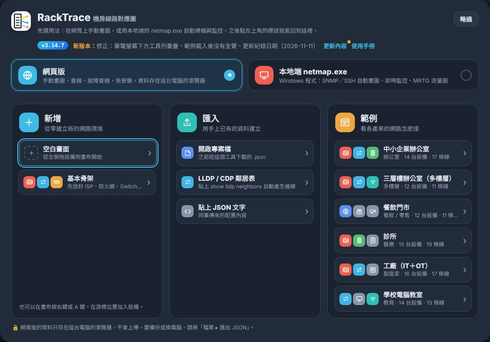
- 開啟網頁版：coloplay1.github.io/netmap。第一次會看到開始頁，選「網頁版」。
- 先看範例：在「範例」選一個產業（例如「中小企業辦公室」；想看多樓層就選「三層樓辦公室（多樓層）」），馬上有一張完整的圖可以玩。
- 點任何一個埠：整條路徑會亮起來，直到網路入口（光世代／ISP）。
- 自己畫：回首頁（點左上角標誌）選「新增空白圖」，用左邊的「設備」工具列加設備，從一個埠拖到另一個埠就是接線。
- 想自動畫：在開始頁選「本地端 netmap.exe」，下載 netmap.exe，輸入核心 Switch 的 IP 與 SNMP community，掃完自動在網頁打開。
3介面導覽
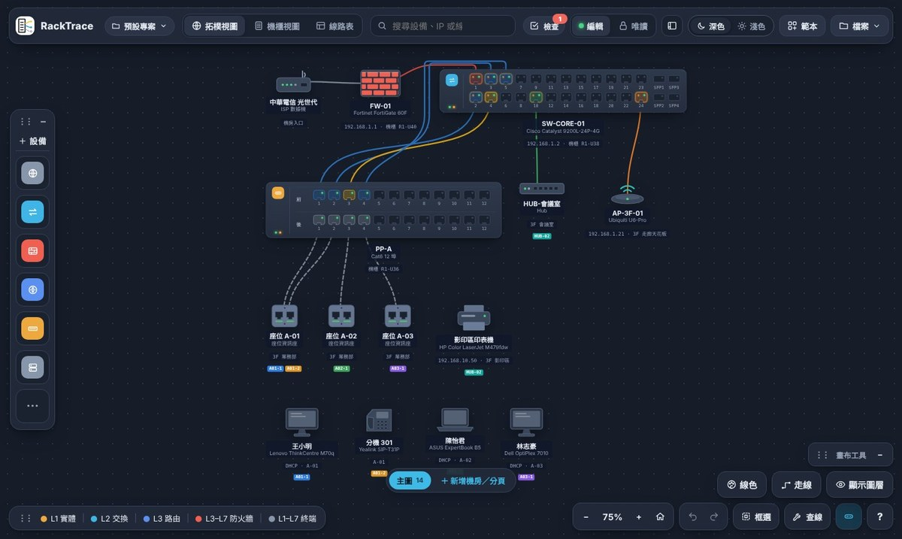
| 位置 | 內容 |
|---|---|
| 左上標誌 | 點一下回到開始頁（新增／匯入／範例）。 |
| 上方分頁 | 拓樸視圖（連線圖）、機櫃視圖（依 U 位排列）、線路表（所有線一覽）。 |
| 搜尋列 | 打設備名稱、IP、MAC 或線號，按 Enter 跳到符合的設備。 |
| 編輯／唯讀 | 唯讀模式下不會誤改，適合拿給別人看或現場查線。 |
| 深色／淺色 | 切換畫面主題。 |
| 範本、檔案 | 載入產業範例；匯入匯出、分享連結、列印。 |
| 左側「設備」工具列 | 點圖示加入設備；按「⋯」看更多種類。 |
| 右下角工具 | 縮放（−／＋）、⌂ 回到預設位置、復原／重做、查線（故障查線）、屬性列開關、? 說明。 |
| 右下「畫布工具」 | 線色、走線、顯示圖層。 |
| 下方圖例 | 依 OSI 層標示設備顏色：L1 實體、L2 交換、L3 路由、L3–L7 防火牆、L1–L7 終端。 |
每個面板左上角都有 ⋮⋮ 可以拖曳移動，按 – 收合。不見了可以從右上「面板」按鈕重設位置。
4建立網路圖
新增設備與選型號
- 點左側工具列的圖示，或在畫布空白處按右鍵／按 A，就會在游標位置加一台設備。
- 點設備後右邊會打開「設備屬性」，分成 設備資訊 與 網路流量 兩個分頁（分頁上的小燈號：綠＝有監控資料、紅＝沒有回應、灰＝沒有資料）。「設備資訊」可以設定名稱、廠牌、型號、IP、Gateway、MAC、位置、機櫃與 U 位。
- 廠牌欄可以打中文、縮寫或產品線，例如「飛塔」「ubnt」「Catalyst」都找得到。
- 型號清單旁會標示埠數（例如「24 埠 + 4 SFP」），選了型號後埠的數量與名稱會自動套用。
- 雙擊設備切換「圖示模式」與「網路埠模式」：圖示模式較精簡，網路埠模式可看到每個埠。
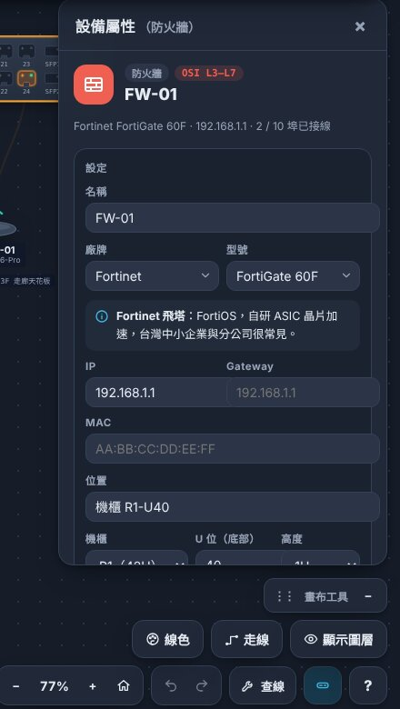
接線
- 把設備切到網路埠模式（雙擊設備）。
- 從一個埠按住拖曳到另一個埠，放開就接好了。拖到收起來（圖示模式）的設備上，會自動接到它的第一個空埠。
- 要改插到別的埠：直接拖曳已經接線的埠到新的埠。
- 點線可以設定線號、線材（Cat6、單模／多模光纖、DAC、Console）、長度與顏色。
埠的小燈號：灰色＝空埠、綠色＝已接線，小閃電＝PoE 供電。
無線連線（Wi-Fi）
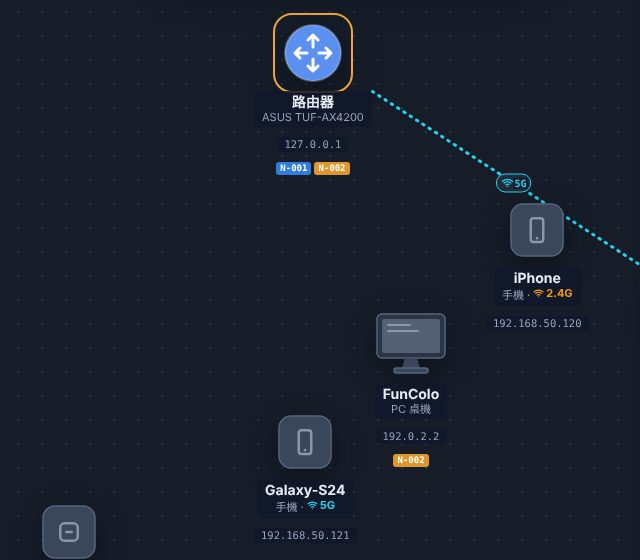
手機、筆電、平板這類用 Wi-Fi 上網的設備，不需要畫網路線：點設備 ▸「設備資訊」▸ 連線方式 選 無線 Wi-Fi，再選它連到哪一台 AP 或路由器、哪個頻段（2.4G／5G／6G）。
- 畫面上用虛線連到 AP，並標出頻段（2.4G 橘色、5G 藍綠色、6G 紫色）；設備名稱下方也會顯示 Wi-Fi 圖示。平常跟一般終端的線一樣收起來，點設備或在「顯示圖層」選「全部」時才畫出來。
- 改成無線時，原本接到同一台 AP／路由器的網路線會自動移除（可以復原）。
- 查線、故障查線、「如果這台壞了」都會經過無線連線：AP 壞掉時，連在上面的手機筆電會列入影響範圍。
- 用 SSH 監控的路由器可以自動找出哪些設備是無線的，見 SSH 流量監控。
配線架與資訊座
配線架有「前」「後」兩排。前面的埠用跳線接到 Switch，後面的埠用牆內線接到各樓層的資訊座（座位 A-01 之類）。
- 後排到資訊座的牆內線會畫成虛線，和機櫃內的跳線區分。
- 滑鼠移到配線架的埠上，會同時標出同一號的前後兩個埠。
排列與走線
- 走線 → 依連線自動排列設備：依照上下游關係自動排成由上（網路入口）到下（終端）的樹狀。
- 走線方式：「曲線」或「直角（自動分道）」。直角模式下平行的線會自動錯開，不會疊在一起。
- 點一條線，再雙擊線可以加錨點，拖錨點調整走向；雙擊錨點刪除。
- 上排的埠會先往上出線、再沿機身繞出，避免線穿過設備。
- 走線 ▸ 平行線收成一條：同一對設備之間有 2 條以上的線（例如 LACP 聚合、備援上聯），畫成一條粗線並標出條數與群組名稱。點粗線會列出每一條，點其中一條就單獨畫出來。
- 點太小的埠：48 埠的 Switch、配線架在畫面縮小或用平板操作時，埠很小容易點錯。這時點一下會放大成一排大按鈕（原本點到的那一埠有框起來），再點一次選定；拖線接到小埠上也一樣。不需要的話可以在 走線 選單關掉。
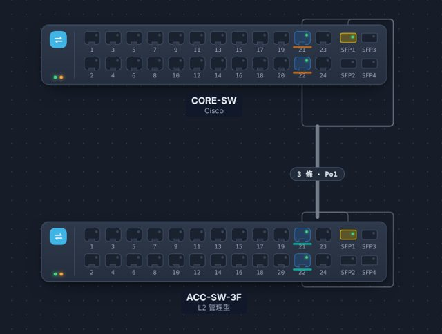
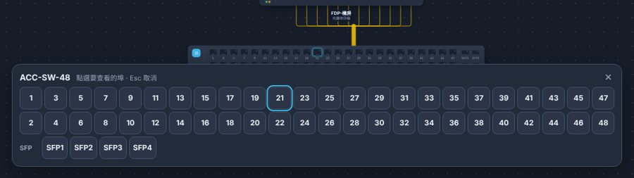
多張圖與「全部總覽」（樓層、機房、分公司）
環境大的時候，一張圖會擠不下。檔案 ▸ 新增頁面（或畫布下方分頁列的 ＋）可以把圖分成好幾頁，例如「1F 機房」「2F 辦公室」「3F 研發」。有兩頁以上時，畫布下方會出現分頁列，最左邊多一個「全部總覽」。想先看一份現成的，開始頁的範例選「三層樓辦公室（多樓層）」。
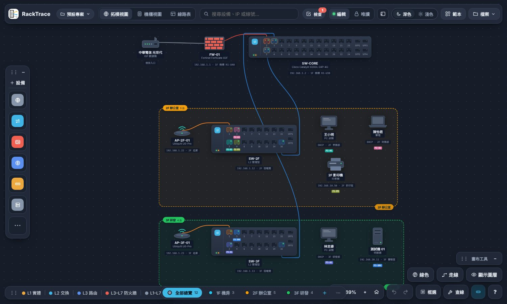
- 全部總覽：看整體的連線狀態，跨樓層的線直接連起來，不需要連接標籤。第一頁（例如「1F 機房」）不畫框，只標出劃進其他樓層的設備。
- 單獨一頁：只顯示那一層的設備；接到別頁的線畫一小段，接到「→ 2F 辦公室」的標籤，點標籤就跳過去並選好對面的埠。
- 分頁列：每個分頁前面有顏色圓點（與總覽的虛線框同色）和設備數；有設備沒回應時，會多一個紅色數字。雙擊頁籤改名稱；在頁籤上按右鍵可以改名稱、往前／往後移、刪除這個分頁（上面的設備會搬到你選的頁面，線路不會不見）或新增分頁；按 ⋯ 可以一次管理所有頁面。
- 把設備放進樓層有三種方式：
- 框選或 Ctrl＋點選設備，上方操作列選「移到分頁…」，或選「＋ 新增樓層並移入…」一次建好樓層（還沒有任何分頁時也可以這樣做）。
- 點單一設備 ▸「設備資訊」▸ 所在頁面，選頁面，或選「＋ 新增分頁並移入…」。
- 在某一頁新增設備，就會放在那一頁（位置會避開其他頁的設備）。
- 查線、故障查線、「如果這台壞了」都會跨頁面走完整條路徑；路徑清單裡其他頁的設備會標上頁面名稱。機櫃視圖、線路表、搜尋、匯出都是整份專案一起處理。
樓層框（只出現在「全部總覽」）
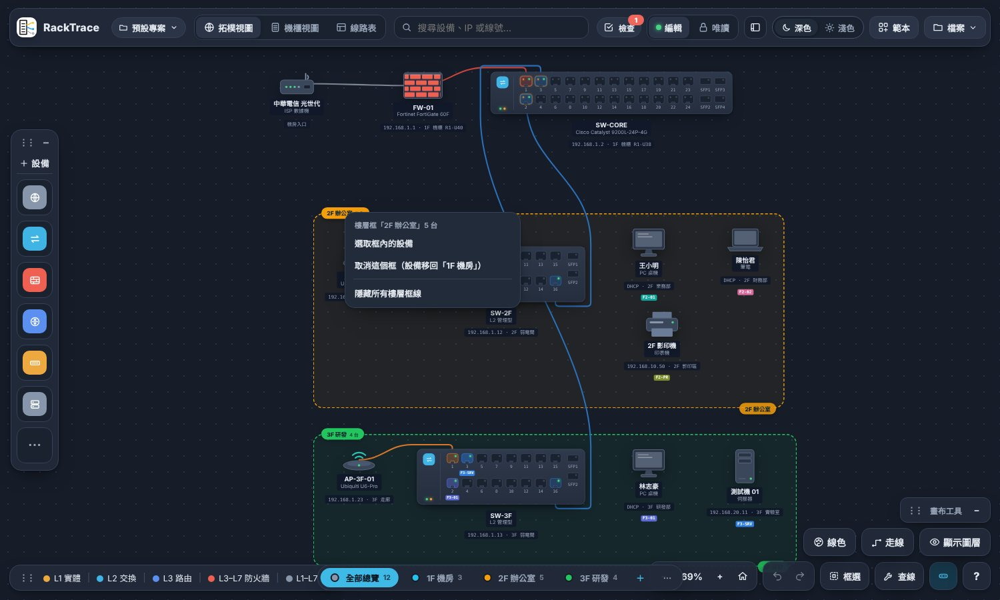
- 同一樓層的設備靠得近會合併成一個框；離得很遠的各畫各的，不會把中間不相干的地方也圈進去。
- 點標籤選取框內的設備；拖曳框線或標籤，框內的設備整群一起移動；雙擊標籤切到那一層。
- 右鍵框或標籤：「選取框內的設備」、「取消這個框（設備移回第一頁）」、「隱藏所有樓層框線」。單一設備的右鍵選單也有「移回『第一頁』」。
- 不想看到框：右下「顯示圖層」▸ 樓層框線 ▸ 隱藏（設定會記住）。
選取多台設備、框選與批次操作
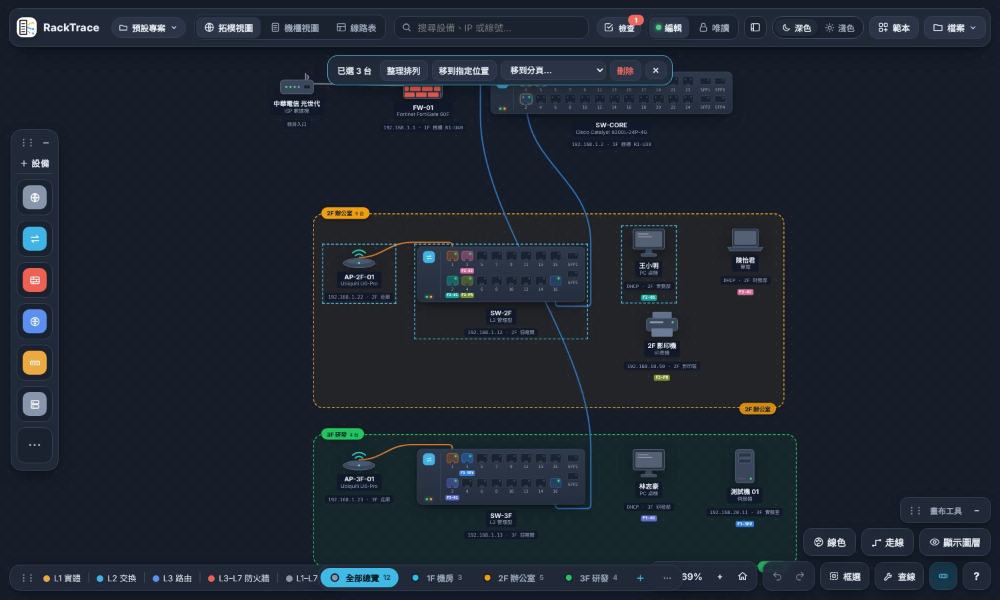
| 操作 | 效果 |
|---|---|
| 右下「框選」按鈕，或 Shift＋拖曳空白處 | 拉出一個方框，框住的設備全部選取。 |
| Shift＋拖曳空白處（已有選取時） | 累加到目前的選取，不會取代。 |
| Ctrl（Mac 是 ⌘）＋點設備，或 Shift＋點設備 | 逐台加入或取消；選到兩台以上就是群組選取。 |
| 拖曳任一台已選的設備 | 整群一起移動。 |
| 右鍵點空白處，或框選拖曳到一半按右鍵 | 取消選取／取消這次框選；開著框選模式時再按右鍵會關掉框選模式。 |
| Esc、操作列的 ✕ | 取消選取。 |
操作列的按鈕：整理排列（排成整齊的格子）、移到指定位置（再點畫布上要放的位置）、移到分頁…、刪除（要按兩次確認）。設備右鍵選單也有「選取這台和底下的終端」「只選取直接連到這台的設備」等快速選法。
光纖收容箱與光纖束
機房之間、樓層之間常用一條多芯光纜（12、24、48 芯），兩端各接一個光纖收容箱（FDP／ODF），再從收容箱用 LC 跳線接到 Switch。
- 在畫布按右鍵 ▸ 光纖收容箱，或把配線架的「設備資訊 ▸ 光纖」勾選 這是光纖收容箱（埠會變成 LC 光纖接頭）。
- 點其中一台收容箱 ▸「設備資訊 ▸ 光纖」▸ 建立光纖束：選另一端、芯數、單模／多模、長度。兩邊背面的空埠會一對一接起來；埠不夠會自動加。
- 收容箱正面用一般方式接 LC 跳線到 Switch 的 SFP 埠。查線時會穿過收容箱、走過那一芯，到另一端的設備。
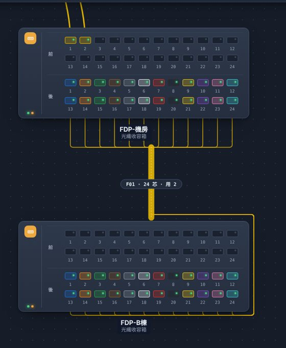
- 每一芯依 TIA-598 色碼標色（藍、橘、綠、棕、灰、白、紅、黑、黃、紫、粉紅、水藍），超過 12 芯時每 12 芯一管。
- 點粗線或標籤：列出每一芯的顏色、兩端埠號，以及跳線接到哪台設備；沒接跳線的是備用芯。點一列就單獨選取那一芯。
- 線號自動編成「F01-1」「F01-2」…，「修改名稱／長度」會一起更新。
- 兩台收容箱放在不同頁面時，光纖束會變成跨頁面的連接標籤。
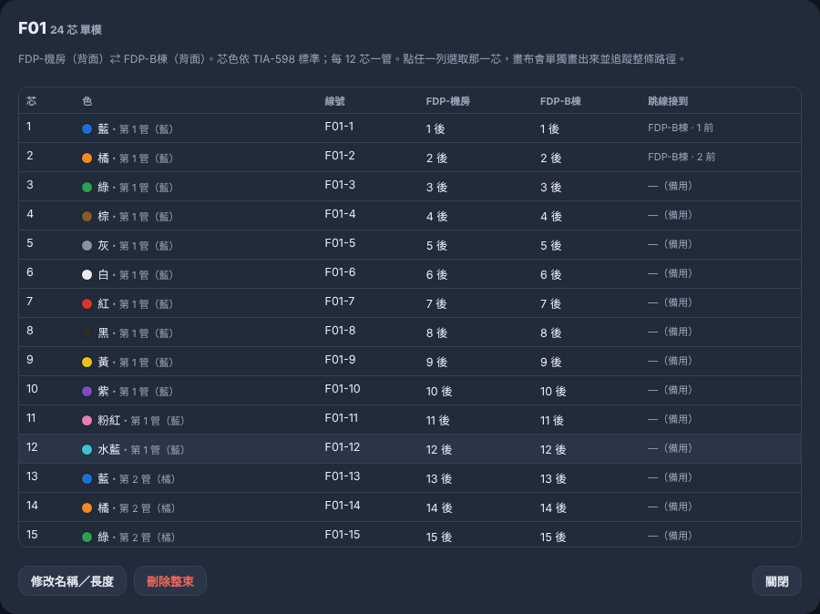
5查線路
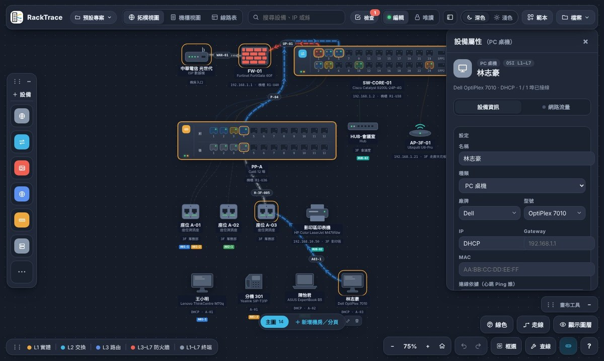
- 點埠：顯示這個埠經過的整條實體路徑（Switch → 配線架 → 資訊座 → 電腦），埠的上方出現設定列。
- 點設備：亮出這台設備一路往上到網路入口的所有線路，線上有箭頭表示流向。
- 沒有選任何東西時：預設只顯示設備之間的主幹線路；接電腦、電話、印表機等的終端線會收起，兩端用相同顏色的小標籤配對。
- 線路顯示模式在「顯示圖層」裡切換：主幹／全部／隱藏。隱藏時兩端仍保留色標，方便對照。
- 搜尋列打線號（例如
H-3F-001）可以直接找到那條線。
6埠設定（VLAN／PoE／LACP）
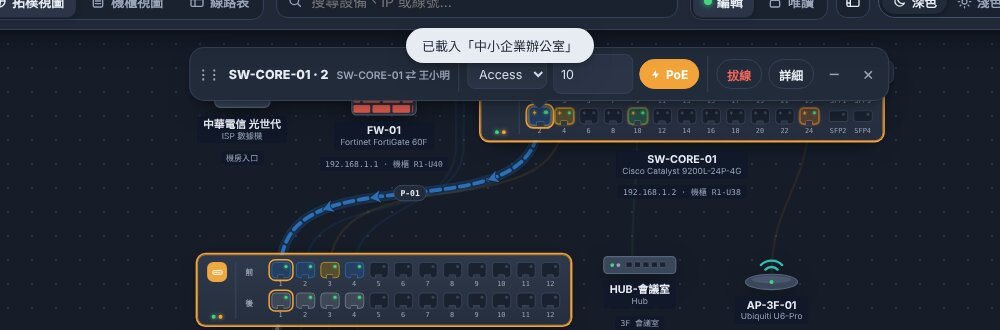
- Access／Trunk：Access 填一個 VLAN；Trunk 可填允許的 VLAN 清單。
- PoE：標記這個埠供電，埠上會出現閃電圖示。
- LACP：按住 Shift 點多個埠（或 Shift+拖曳空白處框選），一次設成同一個 LACP 群組。
- 拔線：刪除這個埠上的線。
- 設定列可以拖曳 ⋮⋮ 移到別處，或按 – 收合；右下角的屬性列按鈕可以整個開關。
7檢視與顯示
機櫃視圖
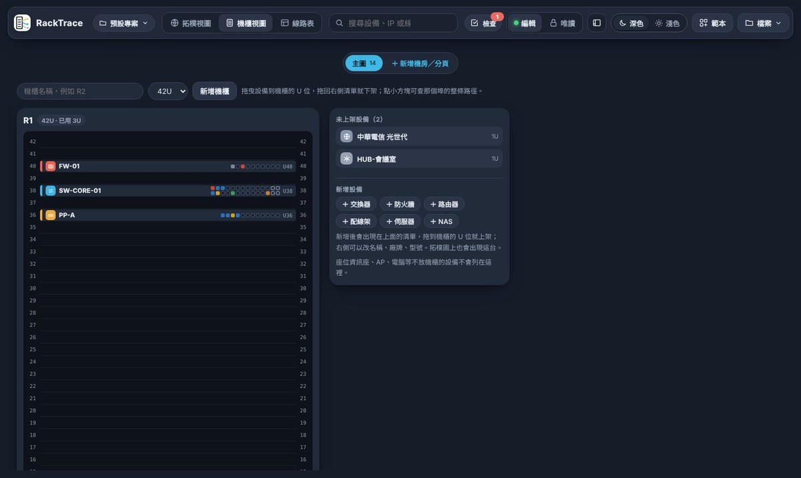
在設備屬性填好機櫃名稱與 U 位、高度，就會出現在對應的機櫃位置。適合列印貼在機櫃門上。
線路表
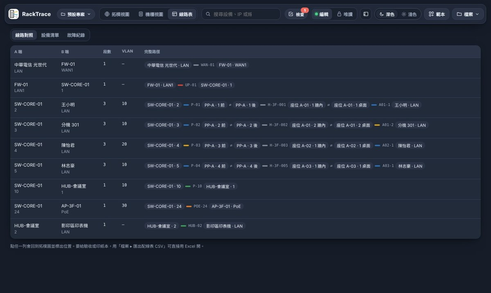
列出所有線：線號、兩端設備與埠、線材、VLAN、長度。可以排序、搜尋，並匯出 CSV 給 Excel 使用。
顯示圖層與線色
- 顯示圖層：勾選要顯示在設備下方的資訊：廠牌型號、IP、MAC、Gateway、位置／機櫃、埠位 VLAN、PoE／LACP 圖示、所有線號、線路速率。
- 全部收成圖示／全部展開網路埠：一次切換所有設備的顯示模式。
- 線色：自訂、依線材（單模光纖黃、多模水藍、DAC 粗黑、Console 淺藍虛線）、依 VLAN（Trunk 為深灰虛線）。
面板、縮放與主題
- 拖曳空白處平移畫布；滑鼠滾輪或 +／− 縮放；0 或右下 ⌂ 回到預設位置。
- 右上「深色／淺色」切換主題，設定會記住。
8故障排查與維修記錄
頂列的 排障 視圖把流程排成三欄：①問題（斷線設備與各項檢查）→ ②查線 → ③維修單。復原／重做在頂列，框選與查線在左側元件列；縮小畫面時終端設備會自動收成「終端 ×N」。
排查分兩步：先用故障查線找出哪一段有問題，再用維修記錄記下怎麼處理，並在圖上看到哪裡還沒修好。
故障查線
使用者回報「不能上網」時，從他的電腦開始，一段一段往網路入口檢查，並記錄每一段的結果。
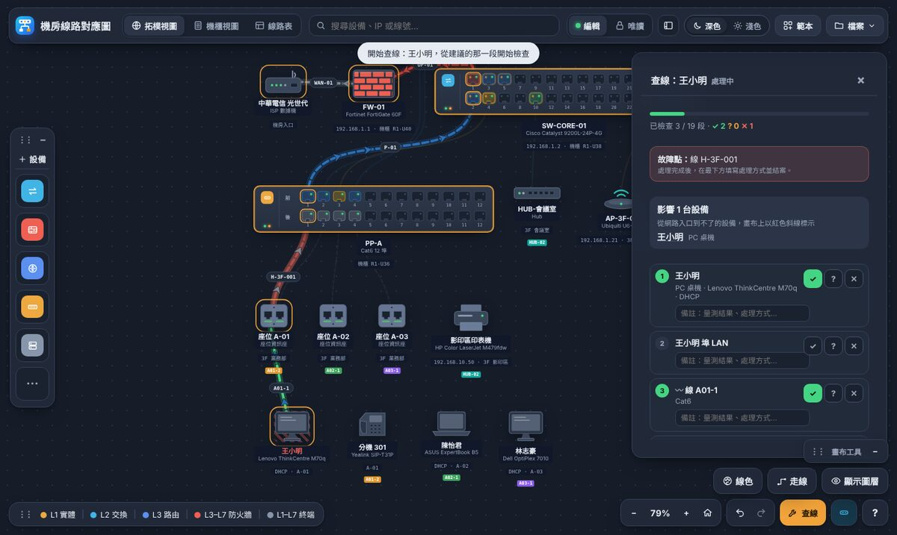
- 按右下角的 查線，再點有問題的設備（例如「王小明」的電腦）。
- 右邊列出從這台電腦到網路入口的每一段：設備、埠、線。程式會先做自動健檢，把 VLAN 不一致、PoE、LACP、線長超過 100 m、IP 重複等可疑處排在前面。
- 每一段按 ✓ 正常、? 不確定 或 ✕ 有問題，可以在備註寫量測結果。上方會提示建議下一個要查的段（用對半法，最快縮小範圍）。
- 標記有問題後，會顯示故障點與影響範圍：從網路入口到不了的設備會用紅色斜線標示。
- 處理完在最下方填處理方式並結案。所有紀錄可在線路表查看並匯出 CSV。
結案前後都可以按面板下方的 轉成維修單，把起點、故障點、各段備註帶進維修記錄（見下一節）。
維修記錄
在 排障 視圖的第三欄管理所有維修單（頂列第 4 個分頁；有待處理問題時分頁上會出現數字徽章）。每一張單依影響範圍分成三種：
| 範圍 | 什麼時候用 | 畫布上的標示 |
|---|---|---|
| 單點 | 一台設備或一條線有問題，例如一支 AP、一條跳線。 | 該設備或線路 |
| 區域 | 一群設備一起出問題，例如某台交換器底下整區沒網路。可勾選設備、加入畫布上選取的設備，或選一台設備連同它的下游一次加入。 | 勾選的每台設備 |
| 全域 | 整個網路都受影響，例如對外斷線、停電。不用選設備。 | 畫面上方紅色提示列 |
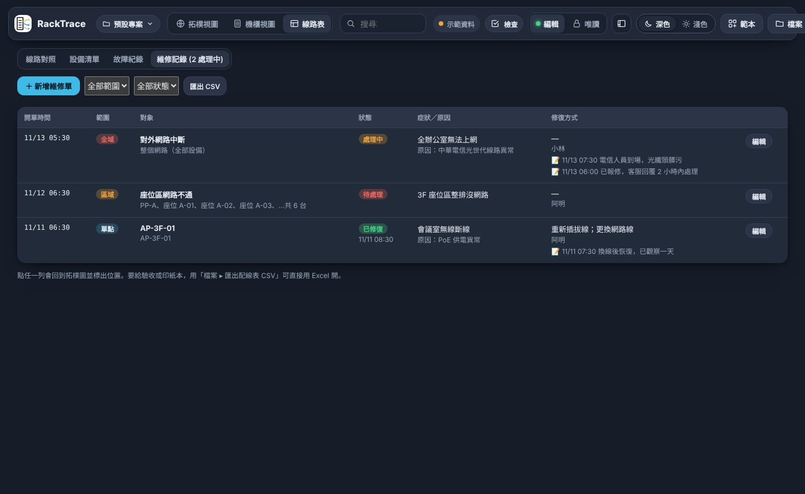
新增一張維修單
- 按 ＋ 新增維修單，或在設備面板按 記錄維修（會自動帶入該設備）。
- 最上面的 從故障通知帶入 可挑：設備沒有回應（監控偵測到的）、檢查發現（資料檢查的問題）、查線紀錄（還沒結案的查線）。選了就會填好範圍、對象和症狀，仍可修改。
- 填 症狀（怎麼發現的）、原因、修復方式。修復方式下方有常用選項（重新插拔線、更換網路線、重開機…），按一下就加進去。
- 狀態分 待處理、處理中、已修復；改成已修復時會自動記下修復時間。
- 處理紀錄可以自由填寫，每按一次「加入紀錄」就依時間記一則，例如「到現場確認電源燈不亮」「換上備品後恢復」。
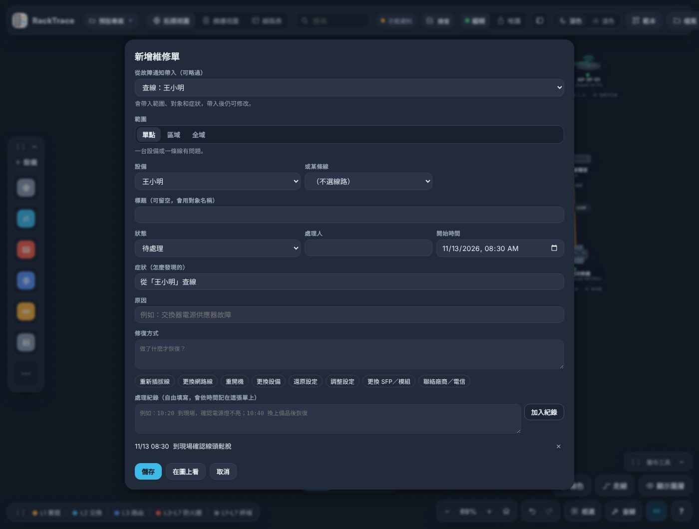
對應到畫布
還沒修好的維修單會直接標在拓撲圖上：對象用虛線外框加 🔧，紅色是待處理、黃色是處理中，線路也用虛線。全域故障在畫面上方顯示紅色提示，點一下回到維修記錄。在維修記錄表點任一列，會跳回拓撲圖並框住受影響的對象。已修復的單不再標示，但記錄會保留。
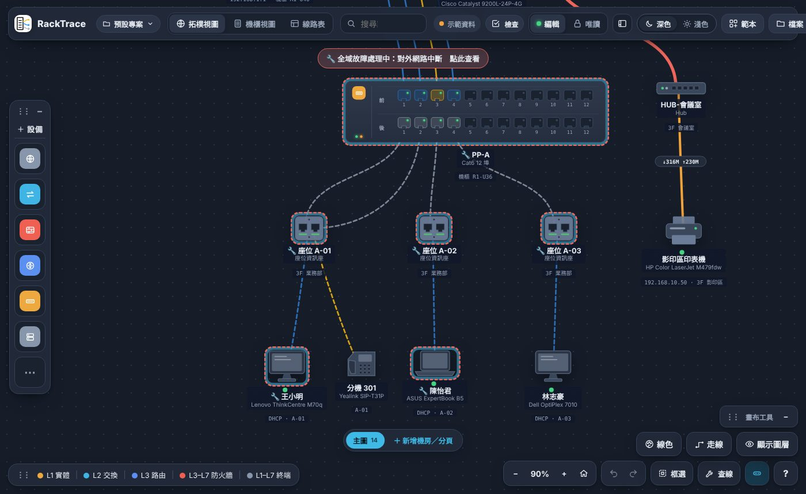
9儲存、匯出與分享
| 功能 | 說明 |
|---|---|
| 自動儲存 | 每次修改都存在這台電腦的瀏覽器（清除瀏覽器資料會不見）。 |
| 匯出／匯入 JSON | 完整備份，換電腦或交給同事時使用。 |
| 匯出 CSV | 線路表給 Excel。 |
| 匯出 SVG／PNG | 圖片，貼到報告或列印。 |
| 匯入 LLDP | 貼上 Switch 的 show lldp neighbors 結果，自動建立連線。 |
| 分享連結、QR Code | 把整張圖壓縮進網址，對方打開就是唯讀版，可貼在機櫃上用手機掃。 |
| 歷史版本 | 改錯了可以回到之前的版本，見下方。 |
| 線標列印 | 每條線兩端的標籤，A4 標籤紙或 Brother P-touch，見下方。 |
歷史版本與還原
檔案 ▸ 歷史版本／還原。改錯、刪錯、匯入蓋掉時，可以回到之前的版本。
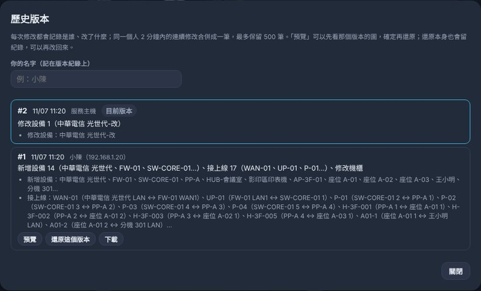
- 預覽：先在畫布上看那個版本的圖（只能看），上方會顯示「預覽 #n」，確定再按 還原這個版本，或按 回到目前版本。
- 還原本身也會記成一筆，還原錯了可以再改回來。下載可以把那個版本存成專案檔。
- 用監控服務網址開啟時：每次修改都記錄在 netmap.exe 那台電腦，大家看到的是同一份紀錄。同一個人 2 分鐘內的連續修改（例如拖曳排版）合併成一筆，最多保留 500 筆。在視窗上填 你的名字，紀錄就會寫名字而不是電腦 IP。
- 線上版：存在這台電腦的瀏覽器，有修改時每 5 分鐘自動留一份，匯入專案檔或套用範本前也會先存一份，最多 40 份。換電腦或清除瀏覽器資料就不見了，重要的圖請另外下載專案檔備份。
資料檢查與單一設備的變更紀錄
檔案 ▸ 資料檢查 會掃整份圖，列出：重複的 IP、MAC、線號、設備名稱；線兩端 VLAN 不一致（access／trunk、VLAN 編號）；光纖接到網路線埠、網路線接到 SFP 埠；網路線超過 100 m；聚合只設一端；IP 格式錯誤、IP 和 Gateway 不在同一網段。點任一項就跳到那台設備或那條線。在設備屬性填 IP、MAC 時，和別台重複也會馬上提醒。
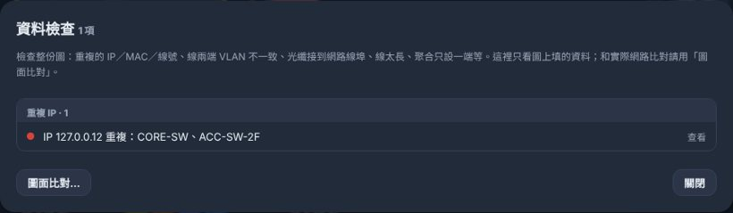
點任一台設備或一條線，在屬性面板按 這台的變更紀錄／這條線的變更紀錄，會列出它自己的修改：誰、什麼時候、哪個欄位從什麼改成什麼、哪條線從哪個埠改接到哪個埠。用監控服務網址時從伺服器的歷史版本整理（最近 500 個版本），線上版從瀏覽器自動保存的版本整理。
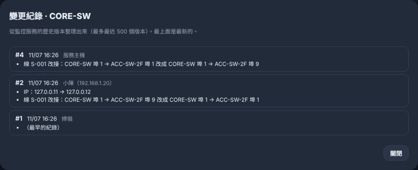
線標列印
檔案 ▸ 線標列印。每條線兩端各貼一張，寫線號、這一端與另一端的設備與埠。
- 範圍：全部的線、目前頁面、搜尋結果，或目前選取的設備／埠／線（例如只印新接的那幾條）。
- 預覽並列印 A4：支援 3 × 8（24 張）、2 × 7（14 張）、4 × 10（40 張）的 A4 標籤紙。印之前先用白紙試印，對齊沒問題再放標籤紙。
- QR Code：手機掃描會打開這張圖並選好那條線（線上版要那支手機先有同一份專案；用監控服務網址時同一個內網直接開）。
- 內容：完整（含位置、機櫃），或精簡給窄標籤帶用：GigabitEthernet1/0/1 會縮成 Gi1/0/1，也可以限制每行最多 18 字（12mm 帶）或 24 字（18mm 帶）。
- 旗標式：A4 版面選「旗標式」，每張標籤分成左右兩半、內容一樣，沿中間虛線對折夾在線上，兩面都看得到線號。
標籤機（CSV）
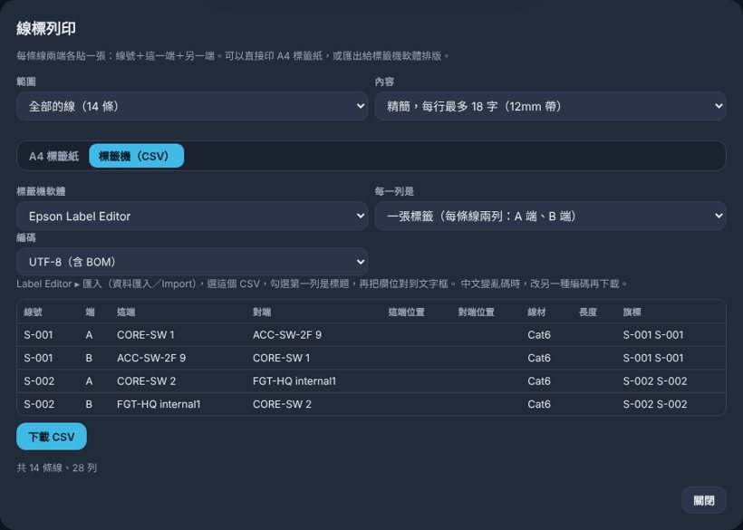
- 標籤機軟體：Brother P-touch Editor、Epson Label Editor、DYMO Connect、Brady Workstation 或 Excel。選了之後編碼會自動設好（P-touch 用 UTF-16，其他用 UTF-8），下方也會說明在那套軟體裡怎麼匯入。中文變亂碼時改另一種編碼重新下載。
- 每一列是一張標籤（預設）：每條線兩列，分別是 A 端和 B 端，欄位有「線號、端、這端、對端、這端位置、對端位置、線材、長度、旗標、QR」。標籤軟體把「這端」「對端」拖到版面上，整批列印就是每條線兩端各一張。
- 每一列是一條線：A、B 端在同一列，適合自己在 Excel 整理。
- 「旗標」欄是線號重複兩次（中間空白），給做旗標式標籤的版面用；「QR」欄是打開這條線的網址，可以在標籤軟體裡設成 QR Code 條碼。
我們沒辦法每一台標籤機都實機測過；如果你的機型匯入有問題，回報給我們欄位或編碼的狀況就能調整。
10netmap.exe（Windows 程式）
netmap.exe 用 SNMP 讀取防火牆、網管 Switch 的資料，自動畫出設備與連線，也可以常駐成「監控服務」，顯示每個埠的即時流量。只會讀取，不會修改設備設定。
安裝版（RackTrace-Setup.exe，建議）
想讓監控一直開著、不用每次手動啟動，用安裝版：到這裡下載 RackTrace-Setup.exe，執行後按「下一步」。
- 裝在
Program Files\RackTrace，註冊成開機自動啟動、不用登入的背景服務（工作排程器的「RackTrace」）。 - 資料放在
%ProgramData%\netmap（所有 Windows 帳號共用）；SNMP 帳密用 Windows 加密，只有這台電腦能解開。 - 安裝時有「允許內網其他電腦連進來」選項（只開放私人／網域網路，預設勾選），讓同事能開
http://這台的IP:18080/；取消勾選就只有這台電腦能看。 - 桌面與開始功能表的「RackTrace」會用瀏覽器打開服務的網頁；直接雙擊
netmap.exe也會打開同一個網頁，不會再開第二個程式。 - 連接埠被占用時，服務會自動換一個可用的埠，並把實際的網址寫在
%ProgramData%\netmap-service.log；舊版 netmap 正在執行時，新版會自動把舊版關掉再接手。 - 出現「4551」或被 Windows 阻擋，通常是「智慧型應用程式控制」(Smart App Control) 擋掉沒有簽章的程式：可在 Windows 安全性 ▸ 應用程式與瀏覽器控制中改成「評估」或「關閉」，或請 IT 放行。程式碼完全公開，沒有付費簽章。
下載與第一次開啟（免安裝的 netmap.exe）
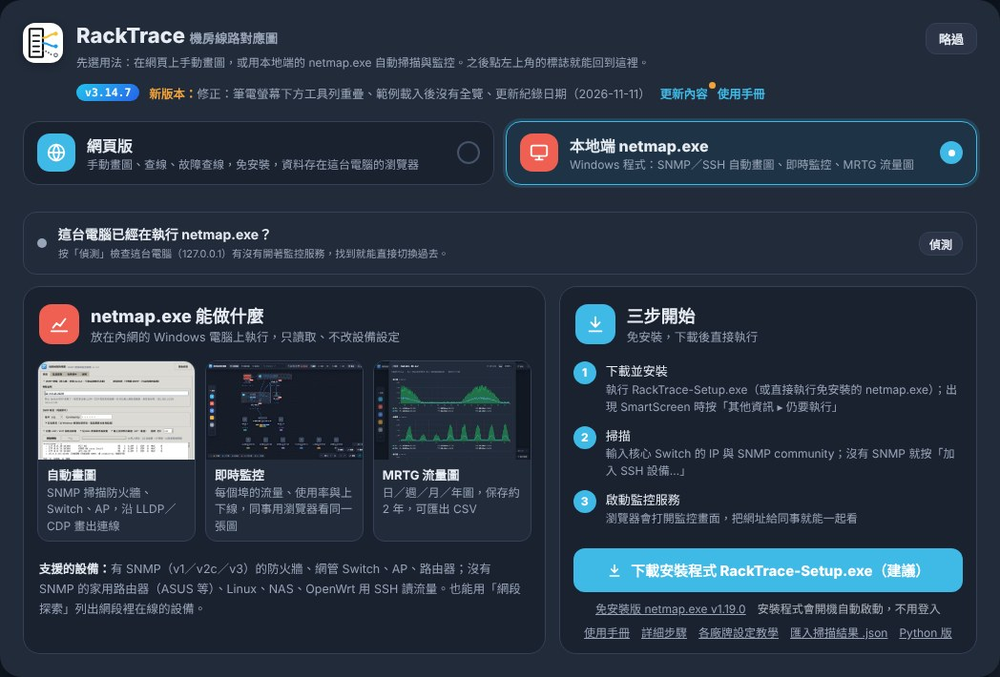
- 在網頁版開始頁或這裡下載 netmap.exe，免安裝，直接執行。
- Windows 可能跳出「Windows 已保護您的電腦」（SmartScreen）：按「其他資訊 → 仍要執行」。這是因為程式沒有付費的程式碼簽章。
- 第一次啟動監控服務時，Windows 防火牆會詢問，請按「允許存取」，其他電腦才能連進來看圖。
- 關閉視窗時會問要「結束程式」或「縮到工作列」。監控服務需要程式保持開著。
在網頁裡掃描（安裝版）
用安裝版時，不用另外開 netmap.exe 的視窗：在服務主機那台電腦用瀏覽器開 http://127.0.0.1:18080/，點上方的「＋ 掃描設備」（或開始頁的「掃描」），在網頁裡輸入核心 Switch IP 與 community，就會掃描並把結果加到目前的圖，掃描中可以看進度、隨時停止。
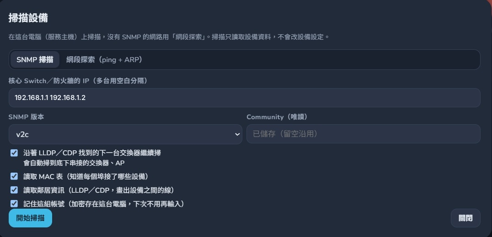
- 掃描只能在服務主機本機操作，而且需要管理權限；其他電腦的瀏覽器看不到這個功能。掃描只讀取設備資料，不會改設備設定。
- 沒有 SNMP 的網路改用「網段探索（ping + ARP）」。
- 掃描結果會略過
127.0.1.1這類本機位址的鄰居。
netmap.exe --gui。SNMP 掃描
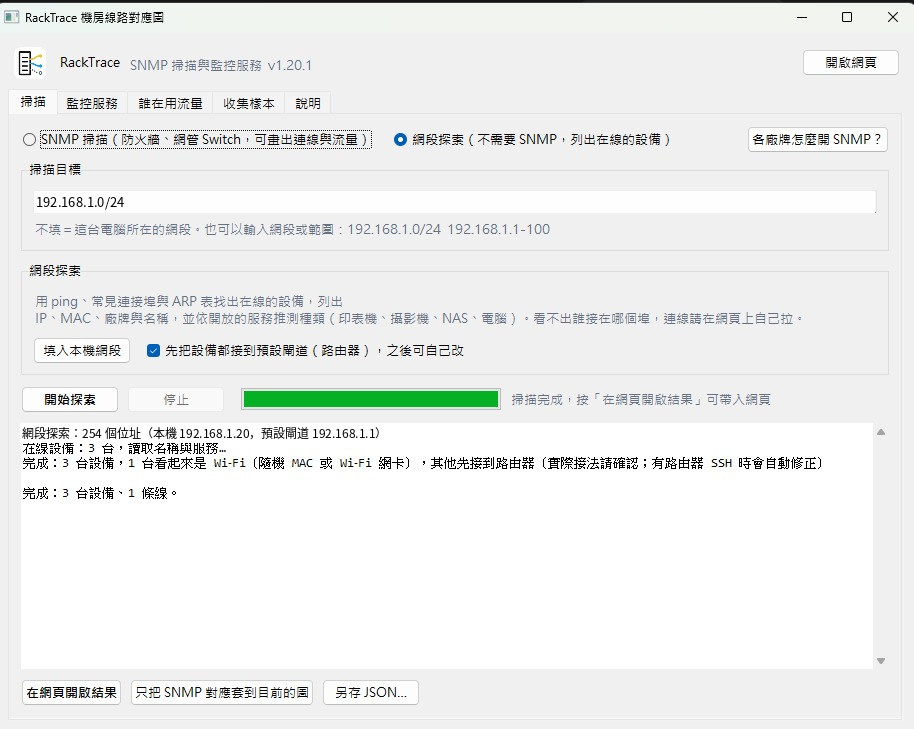
- 掃描目標：填核心 Switch 的 IP 就夠了，程式會沿著 LLDP／CDP 找到其他設備。也可以輸入網段或範圍，用空白分隔，例如
192.168.1.0/24 10.0.0.1-50。 - SNMP 帳密：選版本（v1／v2c／v3）。v2c 填唯讀的 community；v3 填使用者、驗證與加密密碼。勾「記住帳密」會用 Windows 帳號加密保存。
- 選項：沿著 LLDP／CDP 自動找鄰居、從 MAC 表推斷終端設備、建立沒掃到的鄰居（AP、電話等沒開 SNMP 的設備）。
- 聚合（LACP／Port-Channel）會自動標出來：先讀標準的 LACP MIB，沒有的話改讀介面堆疊表（Cisco Port-channel、FortiGate aggregate、Linux bond 多半要靠這個）。一端讀得到、另一端沒回報時，會照對端補上同一個群組名稱，埠備註寫「聚合群組依對端推測」。
- 兩台設備之間有好幾條線、但兩端都沒回報聚合時，不會自動合併（也可能是 STP 備援線），而是標成「可能是聚合」：點那個埠或那條粗線，按 設成同一個聚合群組 或 不是聚合。
- 按 開始掃描。完成後會自動在瀏覽器打開結果。
- 下方按鈕：在網頁開啟結果、只把 SNMP 對應套到目前的圖（保留你手動畫的位置，只補上 SNMP 資訊）、另存 JSON。
沒有回應的設備會顯示原因，例如「可能沒開 SNMP，或 community／帳密不同」或「連不到這個 IP」。
網段探索（不需要 SNMP）
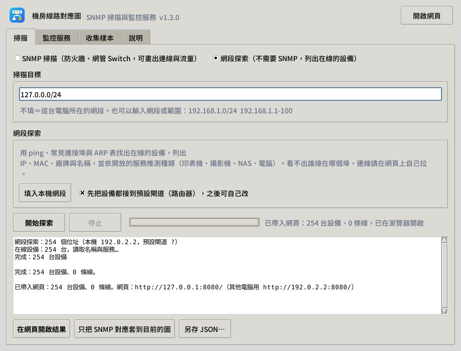
在掃描分頁選「網段探索」，輸入網段（例如 192.168.1.0/24），程式用 ping 與 ARP 列出在線的設備，並依 MAC 判斷廠牌、依開啟的連接埠猜種類（印表機、NAS、攝影機…）。結果一樣可以帶入網頁，但因為沒有 SNMP，不會有埠對埠的連線，需要自己接線。
自動偵測 SNMP（不用重新掃描）
監控服務啟動後，每小時會用 netmap.exe 設定好的 SNMP 帳密，去試圖上還沒有監控的 Switch、路由器、防火牆、AP，以及伺服器、NAS、NVR、印表機。所以流程可以是：
- 先用網段探索或手動把設備畫上圖，填好 IP。
- 有空再到各台設備把 SNMP 打開（community 或 SNMPv3 帳密要和 netmap.exe 一樣）。
- 下一次偵測時（最多一小時，或在監控網頁按 檔案 ▸ 告警、心跳與權限設定 ▸ 心跳與設備偵測 ▸ 現在偵測一次），有回應的設備就會自動開始監控：補上設備回報的實體埠與埠號、把 IP 名稱改成設備名稱，並記一筆「開始 SNMP 監控」事件。
- 原本圖上已有、名稱一樣的埠會直接對應；網段探索建立的「WAN」「ETH1」這類佔位埠，沒接線的會拿掉。已接線但對不上的埠會留著，事件裡會提醒你改成設備上的埠名稱（或重新掃描一次）。
- LLDP／CDP 的鄰居關係（誰接誰）仍然要用 SNMP 掃描 才會畫出來；自動偵測只負責「開始監控」。
- 不想要的話，在同一個設定頁取消勾選「自動偵測 SNMP」。
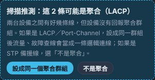
監控服務與即時流量
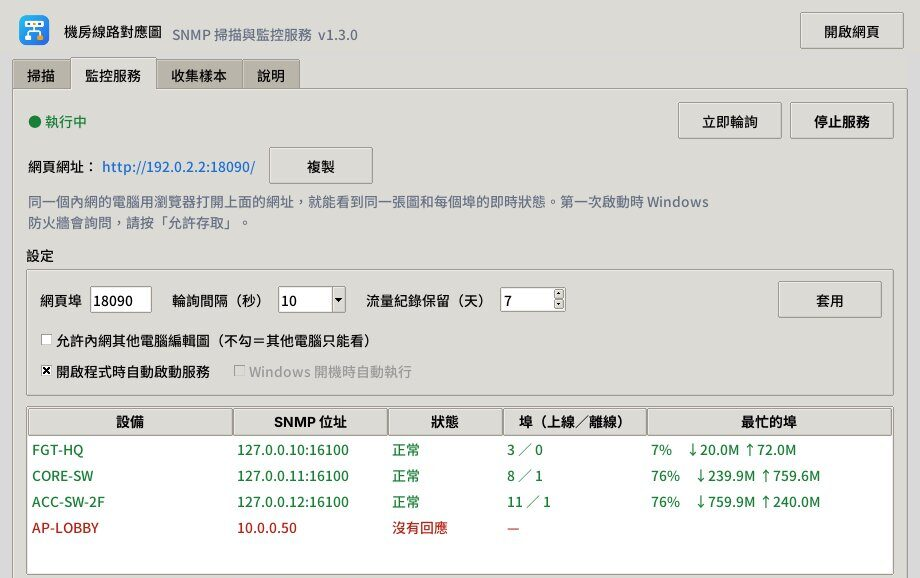
- 先完成一次 SNMP 掃描，再到「監控服務」分頁按 啟動服務。
- 把畫面上的網頁網址（例如
http://192.168.1.20:18090/）給同一個內網的同事，用瀏覽器打開就能看到同一張圖。 - 設定：網頁埠、輪詢間隔（秒）、流量紀錄保留天數；可勾選「允許內網其他電腦編輯圖」與「開啟程式時自動啟動服務」。
- 下方表格列出每台設備的狀態、上線／離線的埠數與最忙的埠。
- 跑 netmap.exe 的這台電腦會自動監控：直接讀它自己的網卡流量，不需要 SNMP。只要圖上那台電腦的 IP 和它實際的 IP 一樣即可。
- 點設備後，右側「即時狀態」卡片會顯示今日流量縮圖和今天的下載／上傳總量，點縮圖打開這台設備的流量圖。
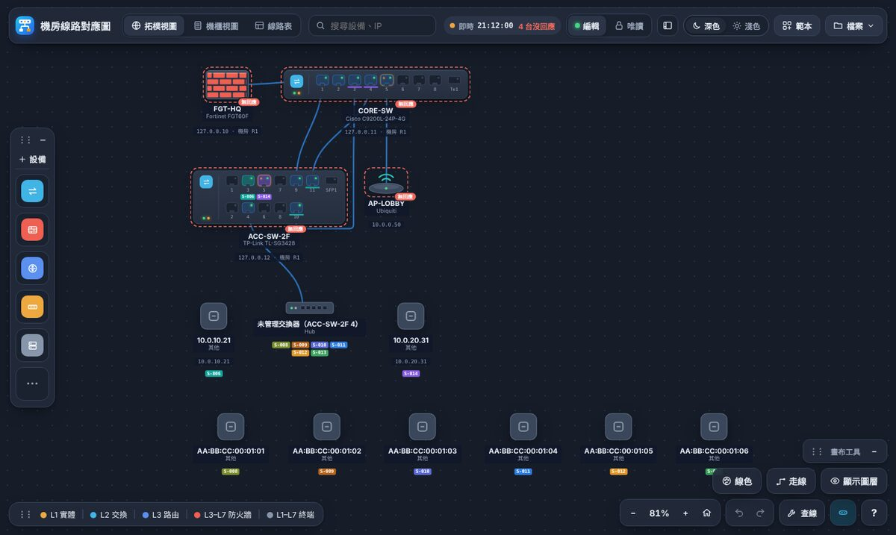
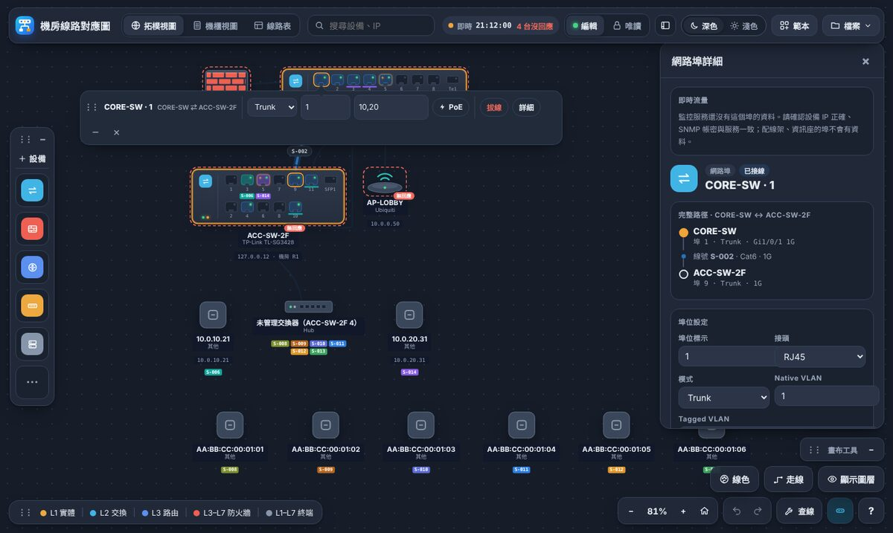
| 線的顏色 | 意思 |
|---|---|
| 綠 | 使用率低（30% 以下） |
| 橘 | 使用率中等（30%–70%），線稍粗 |
| 紅（粗） | 使用率高（70% 以上） |
| 紅色虛線 | 埠離線（線上標示「離線」） |
用平板、手機或其他電腦查看
其他裝置不需要安裝任何東西，也不會去讀 netmap.exe：exe 只在服務主機（Windows）上執行，並在背景提供一個網頁；平板、手機、Mac 只是用瀏覽器打開那個網頁。
| 平板／手機／其他電腦 | 服務主機（跑 netmap.exe） | 網路設備 | ||
|---|---|---|---|---|
| 瀏覽器（Safari、Chrome） | ⟵ 網頁 ⟶ | 圖、燈號、流量紀錄 | ⟵ SNMP ⟶ | Switch、防火牆、AP |
- 在一台固定開機的 Windows 電腦上安裝 RackTrace-Setup.exe（不要裝在會休眠或帶走的筆電），安裝時保留「開機自動啟動」與「允許公司內網的其他電腦用瀏覽器連進來」。
- 先完成一次掃描或畫好圖，確認服務在執行（見上一節）。
- 在平板的瀏覽器輸入服務主機的網址，例如
http://192.168.1.20:18080/。網址可以在服務主機的 exe 視窗按「開啟網頁」後，從網址列看到。 - 連上後會看到和服務主機相同的圖，並有即時燈號與流量。要省去輸入網址，可以用「權限與檢視連結」產生的 QR Code，用平板或手機掃描即可。
- 平板必須和服務主機在同一個內網（不能接隔離的訪客 Wi-Fi）。不在公司時請先連公司的 VPN。
- 連線進來的裝置預設只能看；要編輯需要管理密碼（見「管理密碼與檢視連結」）。
- 連不上時，先檢查服務主機的服務有在執行，以及 Windows 防火牆有沒有開放這個埠。
- 平板以查看、追路徑、現場查線為主。右鍵選單、Ctrl＋點選這類需要滑鼠或鍵盤的操作，在觸控裝置上比較不方便。
從線上版切換到監控畫面
從監控服務的網址打開時，點左上角的標誌回到開始頁，「本地端」分頁會顯示這台服務的狀況：監控中的設備、正常與沒有回應的數量、最後讀取時間，以及「開啟監控中的圖」「流量圖總覽」「故障查線」和有問題的設備，點設備就會打開它的狀態與流量圖。
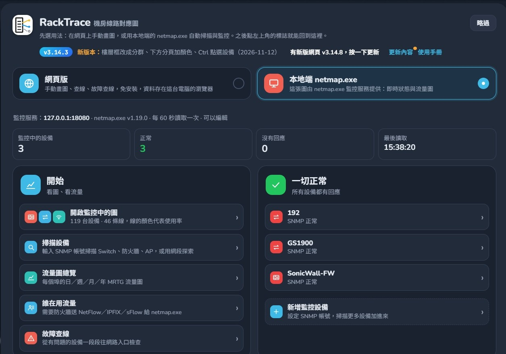
平常習慣打開線上版（coloplay1.github.io）的話，可以讓線上版直接找到這台電腦上的 netmap.exe：
- 在 netmap.exe「監控服務」分頁勾選 讓線上版網頁偵測到這個程式（預設不勾）。
- 在同一台電腦打開線上版，開始頁選「本地端 netmap.exe」，按 偵測。
- 瀏覽器會詢問是否允許存取「這部裝置上的其他應用程式」，按 允許。
- 出現「偵測到 netmap.exe，監控服務執行中」後，按 切換到監控畫面。之後再打開線上版的本地端分頁，會自動偵測。
MRTG 流量圖
監控服務每次輪詢都會把每個埠的流量存起來，整理成和 MRTG 一樣的四張圖。打開方式：
- 監控網頁右上角的 流量圖 按鈕（畫面較窄時只顯示 📈 圖示）。
- 看一台設備：在畫布點設備，右側「即時狀態」卡片按 這台設備的流量圖與狀態，會列出這台設備的上下線、錯誤封包、最後輪詢時間，以及每個埠的流量圖；上方可切換每日、每週、每月、每年。
- 點一個埠，在「即時流量」卡片最下面按 MRTG 流量圖（日／週／月／年）。
- netmap.exe「監控服務」分頁的 流量圖（MRTG） 按鈕。
- 直接打開網址
http://服務電腦IP:埠/#mrtg=all，可以加到瀏覽器書籤，或放在大螢幕上。
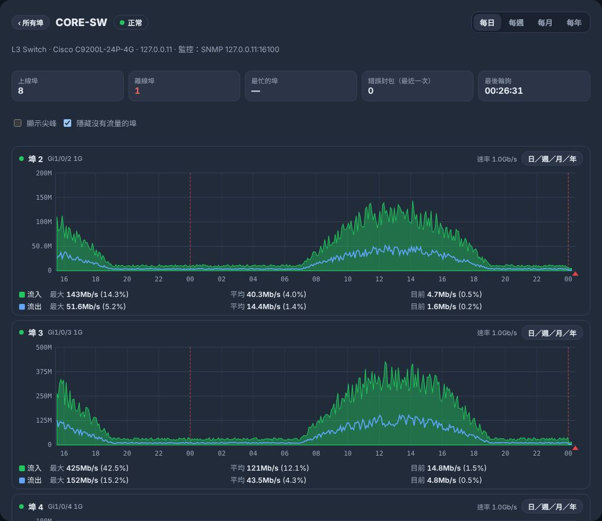
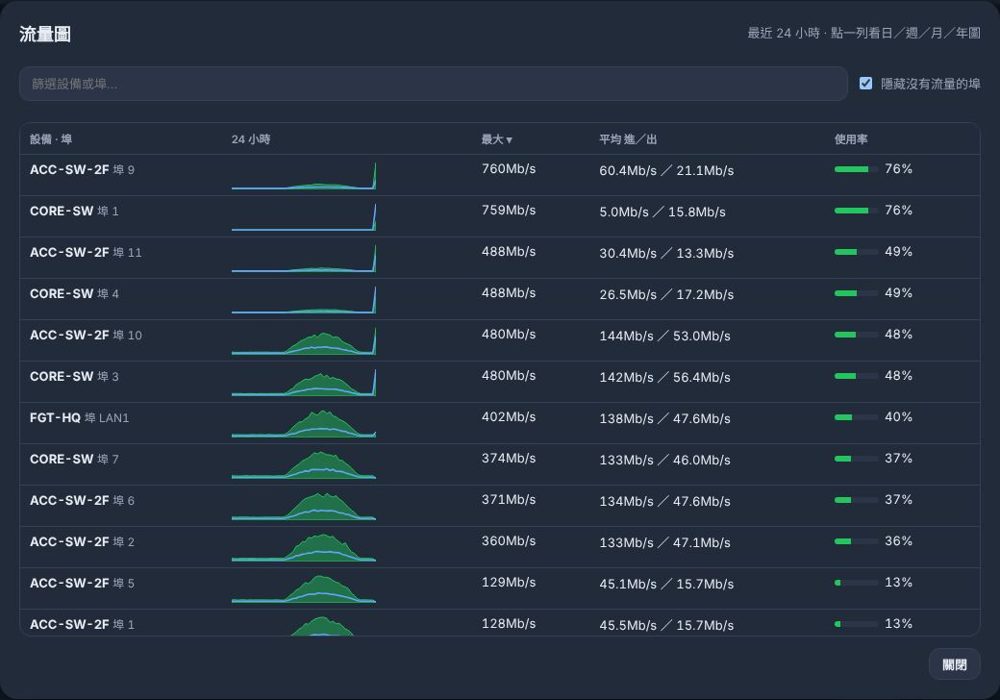
總覽可以篩選設備或埠，預設隱藏沒有流量的埠。點任一列就會打開那個埠的四張圖：
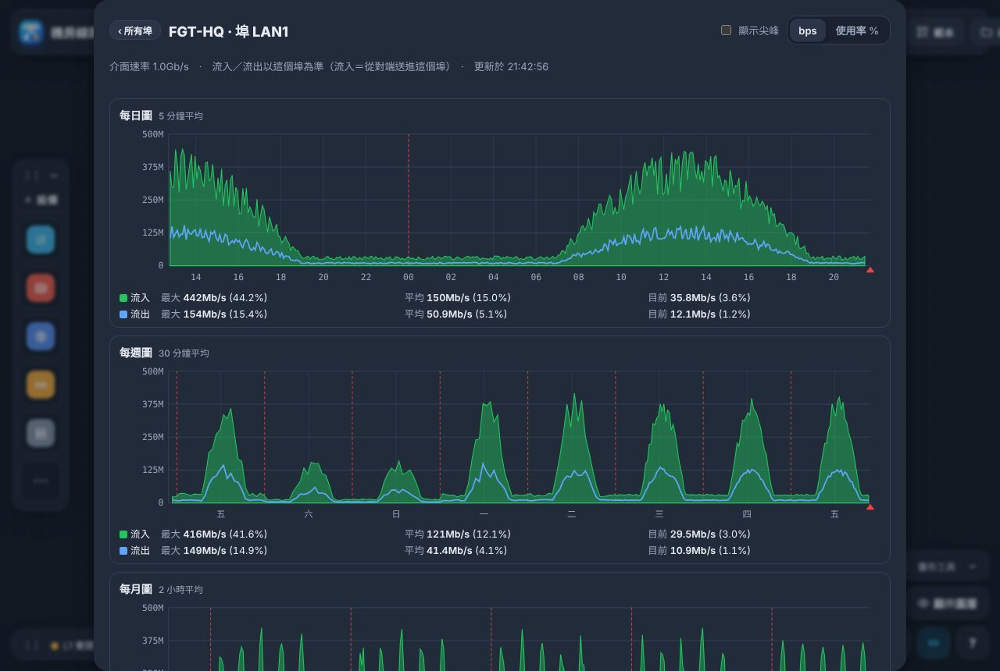
拖曳選取時段
在任何一張流量圖上按住滑鼠拖曳，就會選出一段時間，圖下方顯示這段的總流入／流出量、平均與最高速率。兩側的圓點可左右調整範圍，在選取區中間拖動則整段平移；按「清除」取消。
從設備的流量圖選好時段後，按 看這段時間的對外連線（IP 與流量），可以看到這台設備那段時間連去哪些 IP、用什麼服務、各多少流量。這需要防火牆送出 NetFlow／IPFIX／sFlow，並在設定啟用「流量明細」；連線明細只保留 3 天。
這台電腦現在的連線
在跑監控服務的那台電腦的設備流量圖最下面，會列出此刻的對外連線：哪個程式、連去哪個 IP、什麼服務、幾條連線，不需要防火牆送流量明細。Windows 上還會顯示每條連線的下載／上傳量與目前速率（依流量排序、每 5 秒更新）：這是用系統的 TCP 擴充統計量出來的，需要系統管理員權限（安裝版的監控服務即可），只計開始統計之後的 TCP 流量，QUIC／UDP（如 YouTube、Zoom）量不到。歷史時段的連線仍要靠防火牆的流量明細。
| 圖 | 每一點代表 | 顯示範圍 | 資料保存 |
|---|---|---|---|
| 每日圖 | 5 分鐘平均 | 最近 33 小時 | 3 天 |
| 每週圖 | 30 分鐘平均 | 最近 8 天 | 14 天 |
| 每月圖 | 2 小時平均 | 最近 5 週 | 62 天 |
| 每年圖 | 1 天平均 | 最近 400 天 | 約 2 年 |
- 每張圖下方列出流入、流出的最大、平均、目前值，括號內是佔介面速率的百分比。和 MRTG 一樣，「最大」是那張圖解析度下的平均值中最大的一點，所以每日圖的最大值通常比每年圖高。
- 顯示尖峰：另外畫出每一點時間內的最高值（深綠線＝流入尖峰、紫線＝流出尖峰），適合找短暫的爆量。
- bps／使用率 %：切換縱軸單位。
- 匯出 CSV：把四張圖的數字匯出成 Excel 可開的檔案，方便寫報告。
- 流入、流出是以這個埠為準：Switch 往上接防火牆的埠，「流入」就是從防火牆送進來的流量，也就是使用者的下載。
SSH 流量監控（沒有 SNMP 的設備）
家用路由器（ASUS 等）、Linux 主機、NAS、OpenWrt 通常沒有 SNMP，但可以用 SSH 登入。netmap.exe 可以用 SSH 定時讀取每個介面的流量，一樣有即時流量和 MRTG 流量圖。
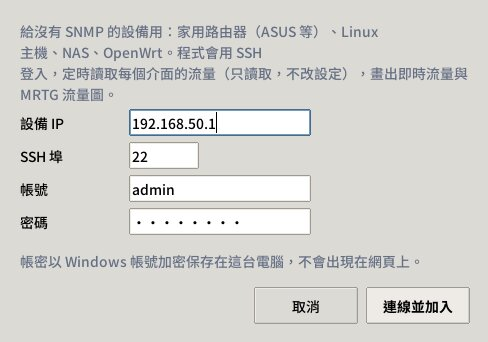
- 設備先開啟 SSH。ASUS：管理頁「系統管理 → 系統設定」把「啟用 SSH」設為只限 LAN。
- netmap.exe「監控服務」分頁按 加入 SSH 設備…，填設備 IP、SSH 埠（通常 22）、帳號、密碼，按 連線並加入。
- 程式會辨識設備並列出要監控的介面。ASUS 路由器會自動標成 WAN（對外）、LAN（內網全部）、2.4G、5G Wi-Fi；Linux 主機則用介面名稱（eth0、enp3s0…）。
- 監控服務會自動啟動。約 1 分鐘後就有即時流量，10 分鐘後流量圖開始出現。
- 如果圖上已經有同 IP 的設備（例如網段探索找到的路由器），會沿用那台設備並補上介面，不會重複建立。
- 只執行讀取指令：
cat /proc/net/dev、/sys/class/net/*/operstate、speed，ASUS 另外讀nvram get型號與介面名稱。不會修改設定。 - 連線會一直保持，不會每次輪詢都重新登入，設備的登入紀錄不會被洗版。
- 帳密以 Windows 帳號加密保存在這台電腦，不會出現在網頁或分享的圖裡。程式也會記住設備的 SSH 主機金鑰，金鑰改變（設備被換掉或有人冒充）時會停止連線並提示。
- WAN 的「流入」就是從網際網路進來的流量，也就是全家的下載量。
- 連在路由器上的設備：點路由器 ▸「網路流量」分頁，會列出連在它上面的設備（每 5 分鐘更新）：有線或無線、2.4G／5G、名稱（DHCP 主機名稱）、MAC 與訊號強度，並標出是否已在圖上。按 把無線設備套用到圖上，圖上已有的設備會改成無線連到這台路由器，不在圖上的無線設備會新增在旁邊（依名稱猜種類：手機、筆電、平板…）。資料來自路由器的 ARP 表、橋接 MAC 表、DHCP 租約，ASUS 另外讀它的用戶端清單。
誰在用流量（NetFlow／IPFIX／sFlow）
SNMP 只能看到每個埠的總量。要知道「是誰在用、連去哪裡」，需要防火牆（或路由器、交換器）把每條連線的摘要送給 netmap.exe，這就是 NetFlow、IPFIX、sFlow。大多數防火牆和網管設備都支援其中一種，netmap.exe 全部都收。
看得到
每台電腦的下載／上傳量與排行、連去哪些 IP、用什麼服務（HTTPS、Zoom、檔案分享…）、在路徑每一段線上佔多少。接在傻瓜 Switch 後面的電腦也看得到，因為防火牆是用 IP 認人。
看不到
沒經過送資料那台設備的流量。防火牆送的話，同一個網段裡電腦之間互傳（例如對同網段的 NAS）不會出現；這部分看交換器的埠流量。
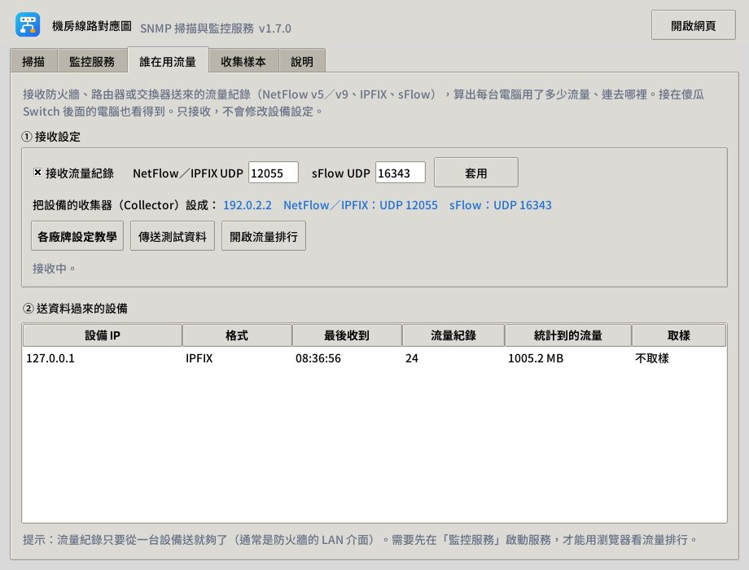
- netmap.exe「誰在用流量」分頁勾選 接收流量紀錄。預設 NetFlow／IPFIX 用 UDP 2055、sFlow 用 UDP 6343，Windows 防火牆詢問時按允許。
- 到防火牆把收集器（Collector）設成畫面上顯示的這台電腦 IP 與埠。各廠牌怎麼設，按 各廠牌設定教學（見下一節）。
- 幾分鐘內，下方的列表會出現防火牆的 IP，代表開始收到資料。還沒設定設備也可以先按 傳送測試資料 試試看。
- 確認「監控服務」已啟動，在監控網頁按右上角 流量圖 ▸ 誰在用。
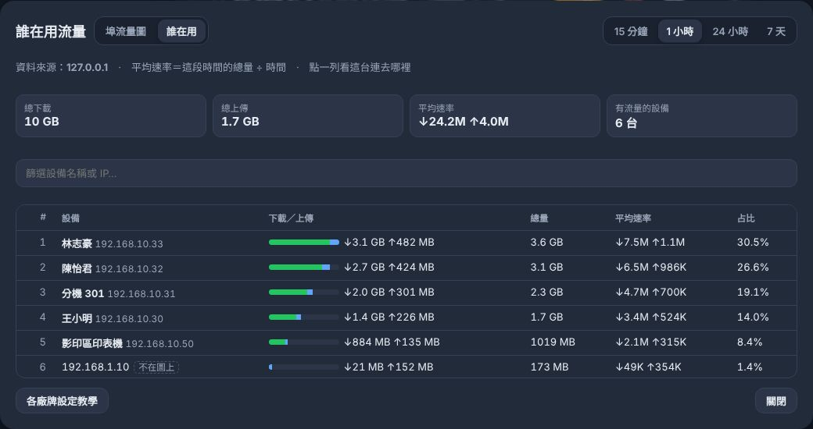
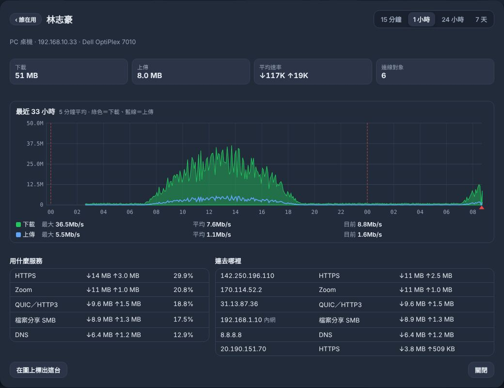
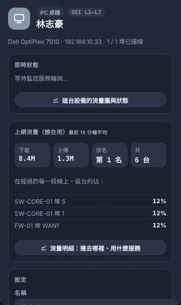
- 點畫布上的電腦：右側會多一張「上網流量（誰在用）」卡片，顯示最近 15 分鐘的下載、上傳、排名，以及它在經過的每一段線上約佔多少（需要那一段的 Switch 有 SNMP）。
- 點一個埠（打開詳細）：顯示「這段線上的主要使用者」，頻寬滿載時一眼就知道是誰。
- 設備是用 IP 對應的：圖上的電腦要填 IP 才對得起來。用 DHCP 的電腦建議在路由器設定保留 IP。
- 資料每 5 分鐘一筆；每台設備的流量保存 31 天，連線明細保存 3 天。
各廠牌設定教學
netmap.exe 的「掃描」分頁（各廠牌怎麼開 SNMP？）、「誰在用流量」分頁，以及網頁開始頁的本地端分頁、流量排行，都可以打開設定教學。netmap.exe 裡會自動代入這台電腦的 IP，指令可以直接複製。
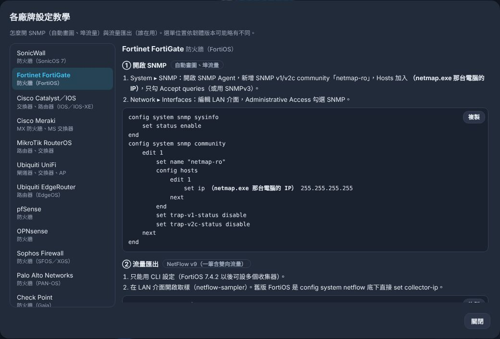
以下是目前收錄的廠牌（{IP} 代表 netmap.exe 那台電腦的 IP，選單位置依韌體版本可能略有不同）：
SonicWall 防火牆（SonicOS 7） · 流量匯出：IPFIX（建議）／NetFlow v9／v5
開啟 SNMP
- Device ▸ Settings ▸ SNMP：勾選 Enable SNMP，在 View 設定唯讀 community「netmap-ro」（或建立 SNMPv3 使用者）。
- Network ▸ System ▸ Interfaces：編輯 LAN 介面（例如 X0），在 Management 勾選 SNMP，允許從內網查詢。
- 存取規則若有限制，允許 {IP} 連到防火牆的 UDP 161。
流量匯出
- Device ▸ AppFlow ▸ Flow Reporting ▸ Settings：Report Connections 選 All（或 Interface-based 只報指定介面）。
- External Collector 分頁：勾選「Send Flows and Real-Time Data To External Collector」（可能需要重新開機）。
- External Flow Reporting Format 選 IPFIX，External Collector's IP 填 {IP}，Port 填 2055。
- 按 Generate ALL Templates 產生範本，再按 Accept。
Fortinet FortiGate 防火牆（FortiOS） · 流量匯出：NetFlow v9（一筆含雙向流量）
開啟 SNMP
- System ▸ SNMP：開啟 SNMP Agent，新增 SNMP v1/v2c community「netmap-ro」，Hosts 加入 {IP}，只勾 Accept queries（或用 SNMPv3）。
- Network ▸ Interfaces：編輯 LAN 介面，Administrative Access 勾選 SNMP。
config system snmp sysinfo
set status enable
end
config system snmp community
edit 1
set name "netmap-ro"
config hosts
edit 1
set ip {IP} 255.255.255.255
next
end
set trap-v1-status disable
set trap-v2c-status disable
next
end流量匯出
- 只能用 CLI 設定（FortiOS 7.4.2 以後可設多個收集器）。
- 在 LAN 介面開啟取樣（netflow-sampler）。舊版 FortiOS 是 config system netflow 底下直接 set collector-ip。
config system netflow
config collectors
edit 1
set collector-ip {IP}
set collector-port 2055
next
end
end
config system interface
edit "internal"
set netflow-sampler both
next
endCisco Catalyst／IOS 交換器、路由器（IOS／IOS-XE） · 流量匯出：Flexible NetFlow v9（路由器、Catalyst 9300／9400 等；部分入門款交換器不支援）
開啟 SNMP
- 用 ACL 限定只有 {IP} 能查詢，並開啟 LLDP（CDP 預設已開）。
ip access-list standard NETMAP
permit host {IP}
snmp-server community netmap-ro RO NETMAP
lldp run流量匯出
- 在連接內網的介面套用 flow monitor（ingress）。
flow exporter NETMAP
destination {IP}
transport udp 2055
export-protocol netflow-v9
flow monitor NETMAP-MON
exporter NETMAP
record netflow ipv4 original-input
interface GigabitEthernet0/1
ip flow monitor NETMAP-MON inputCisco Meraki MX 防火牆、MS 交換器 · 流量匯出：NetFlow v9（MX）
開啟 SNMP
- Organization ▸ Settings：開啟 SNMP（這是雲端的 SNMP，netmap 讀不到埠流量）。
- 要讓 netmap 直接讀設備：Network-wide ▸ General ▸ Reporting 開啟 SNMP，設定 community「netmap-ro」，並允許 {IP}。
流量匯出
- Network-wide ▸ Configure ▸ General ▸ Reporting：NetFlow traffic reporting 選 Enabled。
- NetFlow collector IP 填 {IP}，port 填 2055，儲存。
- MX 只匯出經過路由或 NAT 的流量，同一個 VLAN 裡互傳的流量不會出現。
MikroTik RouterOS 路由器、交換器 · 流量匯出：NetFlow v9／IPFIX（Traffic Flow）
開啟 SNMP
- IP ▸ SNMP：Enabled 打勾；Communities 改成「netmap-ro」，Addresses 填 {IP}/32，只開 Read Access。
/snmp set enabled=yes
/snmp community set [find default=yes] name=netmap-ro addresses={IP}/32 read-access=yes write-access=no流量匯出
- IP ▸ Traffic Flow：Enabled 打勾，Interfaces 選 all。
- Targets 新增：Dst. Address {IP}、Port 2055、Version 9（或 IPFIX）。
/ip traffic-flow set enabled=yes interfaces=all
/ip traffic-flow target add dst-address={IP} port=2055 version=9Ubiquiti UniFi 閘道器、交換器、AP · 流量匯出：IPFIX（UniFi Network 9.1 以後的閘道器）
開啟 SNMP
- UniFi Network：Settings ▸ System（或 Settings ▸ Network 依版本）找到 SNMP，開啟 SNMPv1/v2c 並設定 community「netmap-ro」。
- UniFi 交換器與 AP 也會套用同一組設定。
流量匯出
- Settings ▸ CyberSecure ▸ Traffic Logging：開啟 NetFlow（IPFIX）。
- 收集器填 {IP}，埠 2055。
Ubiquiti EdgeRouter 路由器（EdgeOS） · 流量匯出：NetFlow v9
開啟 SNMP
- System ▸ SNMP 開啟並設定 community，或用 CLI。
configure
set service snmp community netmap-ro authorization ro
set service snmp community netmap-ro client {IP}
commit ; save流量匯出
- 把 eth1 換成連接內網的介面。
configure
set system flow-accounting interface eth1
set system flow-accounting netflow version 9
set system flow-accounting netflow server {IP} port 2055
commit ; savepfSense 防火牆 · 流量匯出：NetFlow v9／IPFIX（softflowd 套件）
開啟 SNMP
- Services ▸ SNMP：Enable，Read Community String 填「netmap-ro」，Bind Interfaces 選 LAN。
流量匯出
- System ▸ Package Manager 安裝 softflowd。
- Services ▸ softflowd：Interface 選 LAN，Destination Host 填 {IP}，Port 2055，NetFlow version 選 9 或 IPFIX，儲存。
OPNsense 防火牆 · 流量匯出：NetFlow v5／v9（內建）
開啟 SNMP
- System ▸ Firmware ▸ Plugins 安裝 os-net-snmp。
- Services ▸ Net-SNMP：Enable，community 填「netmap-ro」。
流量匯出
- Reporting ▸ NetFlow：Interfaces 選 LAN（可多選）。
- WAN 介面若也選了，放進 Egress only 避免重複計算。
- Version 選 v9，Destinations 輸入 {IP}:2055 後按 Enter，套用。
Sophos Firewall 防火牆（SFOS／XGS） · 流量匯出：NetFlow v5
開啟 SNMP
- System services ▸ SNMP（或 Administration ▸ SNMP）：開啟 Agent，新增 community「netmap-ro」，Manager IP 填 {IP}，只給查詢權限。
- Administration ▸ Device access：LAN zone 勾選 SNMP。
流量匯出
- System ▸ Administration ▸ Netflow：Add，Netflow server IP 填 {IP}，port 2055，儲存。
- 只會匯出有開記錄的規則：Rules and policies ▸ Firewall rules，要統計的規則開啟 Log firewall traffic。
- NetFlow v5 沒有 IPv6。
Palo Alto Networks 防火牆（PAN-OS） · 流量匯出：NetFlow v9
開啟 SNMP
- Device ▸ Setup ▸ Operations ▸ SNMP Setup：選 V2c 填 community「netmap-ro」（或 V3）。
- Network ▸ Network Profiles ▸ Interface Mgmt：建立允許 SNMP 的設定檔並套到 LAN 介面，Permitted IP 加 {IP}。
流量匯出
- Device ▸ Server Profiles ▸ NetFlow：新增，Server 填 {IP}、Port 2055。
- Network ▸ Interfaces：編輯 LAN 介面 ▸ Advanced ▸ NetFlow Profile 選剛才的設定，Commit。
Check Point 防火牆（Gaia） · 流量匯出：NetFlow v9／IPFIX
開啟 SNMP
- Gaia Portal ▸ System Management ▸ SNMP：開啟 SNMP Agent，Version 選 v2/v3，Read Only Community 填「netmap-ro」。
流量匯出
- Gaia Portal ▸ Network Management ▸ NetFlow Export：新增收集器 {IP}、Port 2055，格式選 NetFlow V9 或 IPFIX。
Juniper 交換器（EX）、防火牆（SRX） · 流量匯出：sFlow（EX 交換器）；SRX 用 J-Flow v9／IPFIX
開啟 SNMP
- 只允許 {IP} 查詢。
set snmp community netmap-ro authorization read-only
set snmp community netmap-ro clients {IP}/32
set protocols lldp interface all
commit流量匯出
- EX 交換器：在上行與要觀察的介面開 sFlow。
set protocols sflow collector {IP} udp-port 6343
set protocols sflow sample-rate ingress 1024
set protocols sflow interfaces ge-0/0/0
commitHPE Aruba 交換器（AOS-S／AOS-CX） · 流量匯出：sFlow
開啟 SNMP
- AOS-S（2530／2930 等）：
snmp-server community "netmap-ro" operator restricted
snmp-server host {IP} community "netmap-ro"
lldp run流量匯出
- AOS-S：設定 sFlow 收集器並在各埠開啟取樣。AOS-CX：sflow collector {IP} 後 sflow enable。
sflow 1 destination {IP} 6343
interface 1-24 sflow 1 sampling 1024
interface 1-24 sflow 1 polling 30H3C／HPE Comware 交換器、路由器 · 流量匯出：sFlow（交換器）／NetStream（路由器，相當於 NetFlow）
開啟 SNMP
- 只允許唯讀查詢。
snmp-agent snmp-agent sys-info version v2c snmp-agent community read netmap-ro lldp global enable
流量匯出
- 在要觀察的埠（例如上行埠）開啟 sFlow 取樣。
sflow agent ip <交換器管理IP>
sflow collector 1 ip {IP} port 6343
interface GigabitEthernet1/0/1
sflow sampling-rate 4096
sflow flow collector 1華為 Huawei 交換器、路由器、防火牆 · 流量匯出：sFlow（交換器）／NetStream（路由器、防火牆）
開啟 SNMP
- 只允許唯讀查詢。
snmp-agent snmp-agent sys-info version v2c snmp-agent community read cipher netmap-ro lldp enable
流量匯出
- 在要觀察的埠開啟 sFlow 取樣。
sflow agent ip <交換器管理IP>
sflow collector 1 ip {IP} udp-port 6343
interface GigabitEthernet0/0/1
sflow sampling collector 1
sflow sampling rate 4096Ruckus ICX 交換器 · 流量匯出：sFlow
開啟 SNMP
- 只允許唯讀查詢。
snmp-server community netmap-ro ro lldp run
流量匯出
- 在要觀察的埠開啟 sflow forwarding。
sflow destination {IP} 6343
sflow enable
interface ethernet 1/1/1
sflow forwardingTP-Link Omada／JetStream 交換器、閘道器 · 流量匯出：部分 JetStream L2+／L3 交換器支援 sFlow；Omada 閘道器目前沒有 NetFlow
開啟 SNMP
- 單機管理：Maintenance ▸ SNMP ▸ Global Config 開啟，Community 新增「netmap-ro」唯讀。
- Omada 控制器：Settings ▸ Services ▸ SNMP 開啟並設定 community，會套用到所有設備。
流量匯出
- 支援 sFlow 的機型：Maintenance ▸ sFlow，Collector 填 {IP}、Port 6343，再到 Sampler 在上行埠開啟取樣。
Zyxel 防火牆（USG FLEX／ATP）、交換器 · 流量匯出：多數機型沒有 NetFlow／sFlow；可以看埠流量（SNMP）
開啟 SNMP
- 防火牆：System ▸ SNMP 開啟，設定 Get Community「netmap-ro」，Service Control 只允許 LAN。
- 交換器：Management ▸ SNMP（或 Advanced Application ▸ SNMP）設定唯讀 community。
流量匯出
- 沒有流量匯出的話，「誰在用」可以改看上游防火牆或支援 sFlow 的交換器。
DrayTek Vigor 路由器 · 流量匯出：沒有 NetFlow／sFlow
開啟 SNMP
- System Maintenance ▸ SNMP：Enable SNMP Agent，Get Community 填「netmap-ro」，Manager Host IP 填 {IP}。
流量匯出
- 可以看 WAN／LAN 埠流量（SNMP）；要知道誰在用，請改用支援流量匯出的設備。
NETGEAR 網管交換器 · 流量匯出：部分 M4300／M4350 等支援 sFlow
開啟 SNMP
- System ▸ SNMP ▸ SNMP V1/V2 ▸ Community Configuration：新增唯讀 community「netmap-ro」，IP 填 {IP}。
流量匯出
- Monitoring ▸ sFlow：Receiver 填 {IP}、Port 6343，在上行埠設定 Sampler。
D-Link 網管交換器 · 流量匯出：DGS-3000 以上等系列支援 sFlow
開啟 SNMP
- Management ▸ SNMP Settings：SNMP Global State 開啟，Community 新增「netmap-ro」read only。
流量匯出
- 支援的機型：sFlow ▸ Collector 填 {IP}、Port 6343，並在埠上開啟 Flow Sampler。
Synology NAS NAS · 流量匯出：沒有流量匯出
開啟 SNMP
- 控制台 ▸ 終端機 & SNMP ▸ SNMP：啟動 SNMP 服務，勾選 SNMPv1/v2c，community 填「netmap-ro」。
- 也可以改用「加入 SSH 設備…」讀流量（控制台 ▸ 終端機 開啟 SSH）。
ASUS 家用路由器 家用路由器 · 流量匯出：沒有流量匯出
開啟 SNMP
- 多數機型沒有 SNMP，請改用 netmap.exe「監控服務 ▸ 加入 SSH 設備…」。
- 開 SSH：系統管理 ▸ 系統設定 ▸ 啟用 SSH 選「只限 LAN」。測完不用時記得關閉。
Windows 電腦／伺服器 電腦 · 流量匯出：沒有流量匯出
開啟 SNMP
- 設定 ▸ 系統 ▸ 選用功能 ▸ 新增「簡易網路管理通訊協定（SNMP）」。
- 服務（services.msc）▸ SNMP Service ▸ 安全性：新增唯讀 community「netmap-ro」，「接受來自這些主機」加入 {IP}。
Linux 主機 伺服器 · 流量匯出：可安裝 softflowd 匯出 NetFlow
開啟 SNMP
- 最簡單：用 netmap.exe「加入 SSH 設備…」讀流量，不用裝東西。
- 或安裝 snmpd，在 /etc/snmp/snmpd.conf 加入 rocommunity netmap-ro {IP}，重新啟動 snmpd。
流量匯出
sudo apt install softflowd
sudo softflowd -i eth0 -n {IP}:2055 -v 9流量匯出只要開在一台設備上就夠了（通常是防火牆，在 LAN 介面開）。同一台設備的同一份流量若在多個介面都匯出，可能會重複計算。
心跳與事件
監控服務每 30 秒 Ping 一次圖上所有有 IP 的設備（電腦、印表機、攝影機也算），不需要 SNMP。
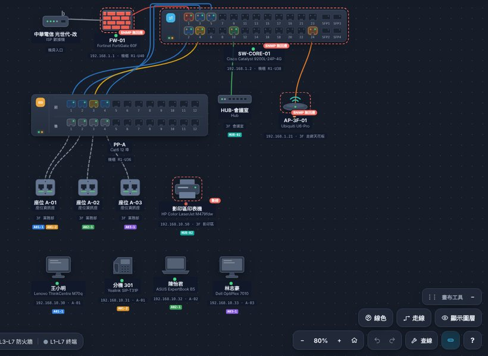
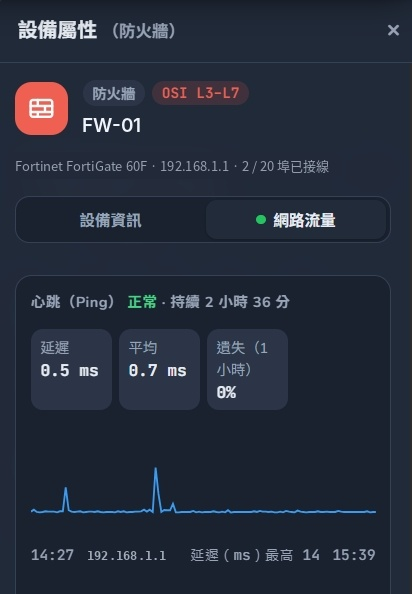
- 點設備 ▸「網路流量」分頁：目前延遲、平均、最近一小時的遺失率、延遲曲線（紅色直條＝那次沒回應），以及這台的最近事件。
- 連續失敗 2 次才算斷線，避免一次掉包就誤報。次數、間隔、延遲門檻可以在設定裡改。
- 設備擋 ICMP 時，會改試幾個常用的 TCP 埠（對方回「拒絕連線」也代表它在線）。
- 會休眠的筆電、手機可以勾「這台不要 Ping」，避免下班後一直顯示斷線。
右上角的鈴鐺是事件紀錄：設備斷線與恢復（附斷了多久）、主幹埠離線、SNMP 沒回應、新設備加入、IP 變更都會記下來，保留 180 天，可以下載 CSV。有新事件時鈴鐺會顯示數字，發生異常時畫面上也會跳提示。
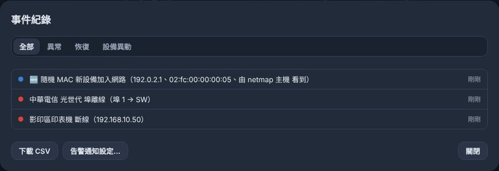
主幹埠是指透過 SNMP／SSH 讀得到狀態、而且線（穿過配線架）另一端是 Switch、AP、路由器、防火牆、伺服器、NAS、NVR 的埠。接電腦的埠下班關機就會離線，所以不會算進來。個別的埠可以在「埠設定 ▸ 離線告警」改成一定通知或不通知。
告警通知（Telegram、Discord、Slack、Teams、LINE、Email）
netmap.exe「監控服務」分頁按 告警、密碼與檢視連結（或在監控網頁按 檔案 ▸ 告警、心跳與權限設定），切到 告警通知。
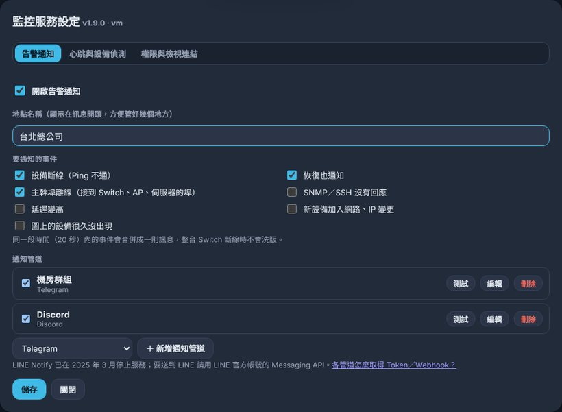
- 勾 開啟告警通知，選要通知哪些事件。預設是設備斷線、主幹埠離線，以及恢復。
- 選管道類型 ▸ 新增通知管道，填 Token 或 Webhook 網址，按 新增。
- 按 測試，確認手機或頻道收得到。
- 按 儲存。
| 管道 | 要準備什麼 |
|---|---|
| Telegram | 找 @BotFather 建立機器人取得 Bot Token；把機器人加進群組，用 @userinfobot 或 getUpdates 查 Chat ID（群組是負數）。 |
| Discord | 頻道設定 ▸ 整合 ▸ Webhook ▸ 新增，複製 Webhook 網址。 |
| Slack | 建立 Slack App，開啟 Incoming Webhooks，選頻道後複製網址。 |
| Microsoft Teams | 在頻道用 Workflows 建立「收到 Webhook 要求時張貼到頻道」，複製網址（舊的 Office 365 連接器已停用）。 |
| LINE | LINE Notify 已在 2025 年 3 月 31 日停止服務。請在 LINE Developers 建立 Messaging API 頻道，發行 Channel access token；收件者是使用者 ID（U 開頭）或群組 ID（C 開頭）。免費方案每月有則數上限。 |
| SMTP 主機、連接埠、帳號密碼、收件者。Gmail 請用「應用程式密碼」，主機 smtp.gmail.com、587、STARTTLS。 | |
| 自訂 Webhook | 送出 JSON {source, title, text, events:[…]}，可以接自己的系統或 n8n、Make。 |
- 20 秒內發生的事件合併成一則訊息，整台 Switch 斷線時不會連續洗版。
- 地點名稱會出現在訊息開頭，例如「[RackTrace 台北總公司] 🔴 SW-CORE 斷線」，幫好幾個地方顧網路時分得出來。
- Token、密碼只存在 netmap.exe 那台電腦（Windows 用 DPAPI 加密），網頁上只會顯示「已設定」。
- 告警要靠 netmap.exe 持續執行。要 24 小時監控的話，勾「Windows 開機時自動執行」，並把電源設定成不睡眠。
管理密碼與檢視連結
同一個設定視窗的 權限與檢視連結 分頁。
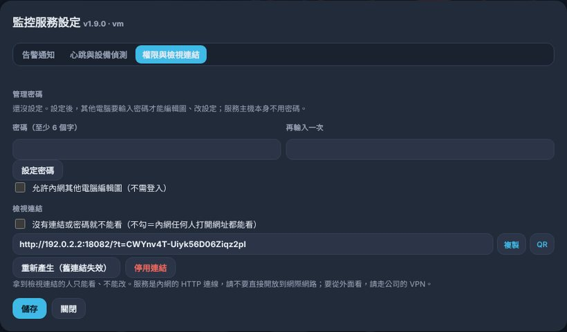
| 誰 | 可以做什麼 |
|---|---|
| netmap.exe 那台電腦 | 永遠是管理員：編輯、還原、改設定，不需要密碼。 |
| 登入管理密碼的電腦 | 和管理員一樣。右上角有 登入／登出，登入 12 小時內有效（服務重開要重新登入）。 |
| 其他內網電腦 | 只能看。沒設密碼又勾了「允許內網其他電腦編輯圖」時可以直接編輯。 |
| 拿到檢視連結的人 | 只能看。勾了「沒有連結或密碼就不能看」時，其他人打開網址只會看到登入畫面。 |
- 檢視連結可以複製或顯示 QR Code，貼在機櫃上或傳給主管。按 重新產生 舊連結就失效。
- 密碼輸錯 5 次會鎖 10 分鐘。密碼只存雜湊值，忘記的話在服務主機上重新設定即可。
- 沒有視窗的伺服器版可以用命令列：
python netmap_server.py --set-password、--view-link。
網路上的設備（新加入／很久沒出現）
監控網頁 檔案 ▸ 網路上的設備。監控服務會整理網路上出現過的每個 MAC 位址：
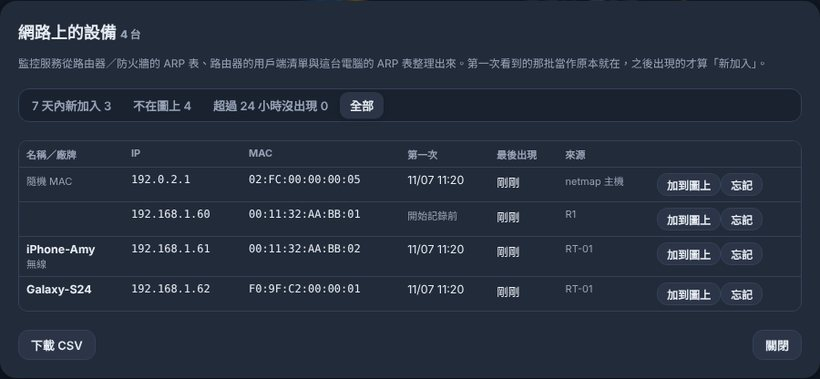
- 資料來源：路由器、防火牆、L3 Switch 的 ARP 表（有 SNMP 的話，每 10 分鐘讀一次）、SSH 監控路由器的用戶端清單，以及 netmap.exe 那台電腦自己的 ARP 表。
- 每個來源（每台路由器、Switch）第一次讀到的那批當作原本就在；之後出現的才算 新加入，同一台 IP 改變會記成 IP 變更。要收到通知，在告警設定勾「新設備加入網路」。
- 不在圖上：圖上沒有這個 MAC 或 IP 的設備，按 加到圖上 會建一台終端設備（名稱、廠牌、IP、MAC 自動帶入），再接線或設成無線即可。
- 很久沒出現：超過設定的時數（預設 24 小時）沒看到。圖上有填 MAC 的設備很久沒出現時可以發通知，適合盤點壞掉或被搬走的設備。
- 手機常用「隨機 MAC」（廠牌顯示「隨機 MAC」），換個 Wi-Fi 或過一段時間 MAC 就會變，可能被當成新設備。
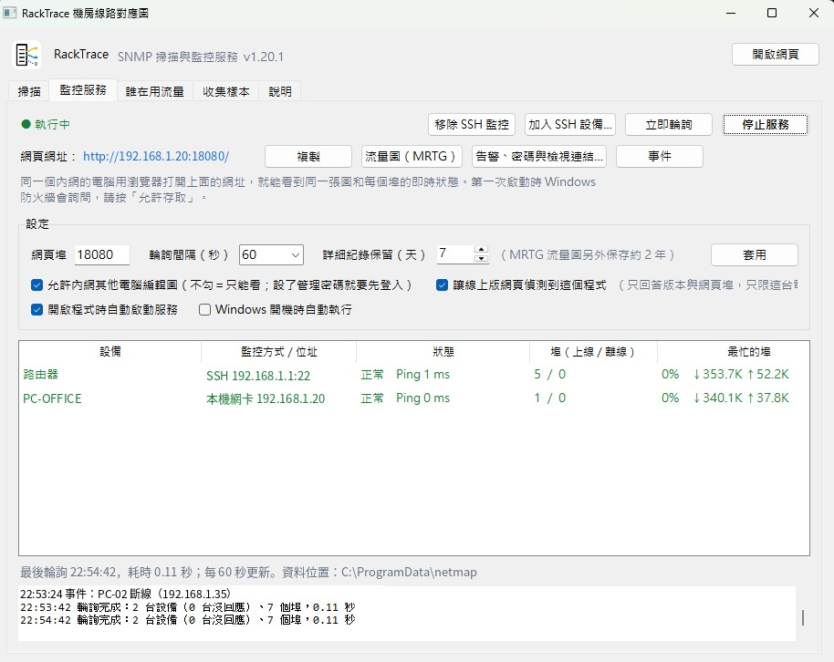
圖面比對（和實際網路對帳）
圖是人畫的，機房改了線卻沒更新圖，之後大家照著錯的圖查線，比沒有圖還糟。所以監控服務會定期（預設每 6 小時）讀每台有 SNMP 的網路設備的 LLDP／CDP 鄰居與 MAC 表，和圖上的線比對。右上角的 ✓ 按鈕（或 檔案 ▸ 圖面比對）可以看結果，也可以按「現在比對」。
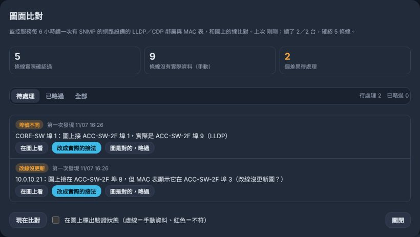
| 差異 | 意思 | 可以怎麼處理 |
|---|---|---|
| 接錯設備 | 圖上這個埠接到 A，但 LLDP／CDP 看到的是 B | 到現場確認後手動改圖 |
| 埠號不同 | 接的設備對，但對端的埠號不一樣 | 「改成實際的接法」一鍵改 |
| 圖上沒畫 | 實際有連線，圖上沒有這條線 | 「在圖上補這條線」 |
| 改線沒更新 | 終端設備（圖上有填 MAC）的 MAC 出現在別的 Switch 埠 | 「改成實際的接法」：把 Switch 那一端移到實際的埠 |
| 終端沒接線 | 圖上沒接線，但 MAC 表看得到它接在哪 | 「在圖上補這條線」 |
| 有線但沒連線 | 圖上兩台網路設備之間有線，那個埠卻沒有連線 | 線拔了、對端關機，或圖面過時 |
| 不在圖上的鄰居 | 埠上接著一台圖上沒有的設備 | 把它加到圖上 |
- 確定圖是對的（例如 LLDP 資訊本身有誤），按 圖是對的，略過；同樣的差異以後不會再提醒。
- 每條線會記下最後一次被實際資料確認的時間。查線時路徑上每一段線都有標記：✓ 實際確認過、✓ 超過 7 天沒再確認、! 和實際不符、? 手動資料。勾選「在圖上標出驗證狀態」後，畫布上沒確認過的線畫成虛線、不符的畫成紅色；有差異的設備標「圖面不符」。
- 穿過配線架的線也算：只要兩端的 Switch 和終端設備對得上，沿路每一段跳線都算確認過。
- 只有開了 SNMP 的網路設備才讀得到 LLDP 與 MAC 表；傻瓜 Switch、沒填 MAC 的終端設備，就只能維持手動資料（標「?」），查線時請以現場為準。
- 新的差異可以發告警（告警設定勾「圖面比對發現新的差異」）；比對間隔在 設定 ▸ 心跳與設備偵測 調整，0 代表不自動比對。
- IP 衝突：同一個 IP 在 30 分鐘內出現兩個不同的 MAC（例如有人手動設了重複的固定 IP），會記一筆事件並告警（預設開啟）。
沒有管理功能的設備（HUB、傻瓜 Switch、數據機）
很多現場的線路亂，是因為中間有不能登入的設備。這些設備不需要 SNMP，也一樣能畫進圖裡：
| 情況 | 怎麼處理 |
|---|---|
| HUB、傻瓜 Switch | 手動新增為一般設備（類型選 Hub），把線連到它的埠。路徑追蹤會穿過它。上游有管理功能的 Switch 會在 MAC 表看到「這個埠後面有哪些設備」，所以能知道終端掛在哪個 HUB 之後。 |
| ISP 數據機（光世代） | 業者管理，通常沒有 SNMP。手動新增，用 Ping 心跳看它有沒有斷線。流量看自己路由器接它的 WAN 埠。 |
| 家用路由器 | 多半沒有 SNMP。有開 SSH 的可以用「SSH 監控」；其他用網段探索（ping＋ARP）找出在線設備。 |
- 看不出的部分：設備接在 HUB 的第幾個埠，系統無法自動判斷，需要到現場確認後手動連線。
- 建議順序：先掃有管理功能的核心 Switch 與防火牆，讓主幹和 MAC 表自動建立；再用網段探索補齊終端；最後一個樓層一個機櫃地手動補 HUB 與接線，不要一次整理全部。
- 現場配合：查出一條線就貼上編號（「線標列印」可產生 A4 或標籤機貼紙），並記在系統裡，下次不用重查。查不出來時可用查線器（音頻探測器）或看設備燈號輔助。
收集樣本（給 log 分析與設定檔備份開發用）
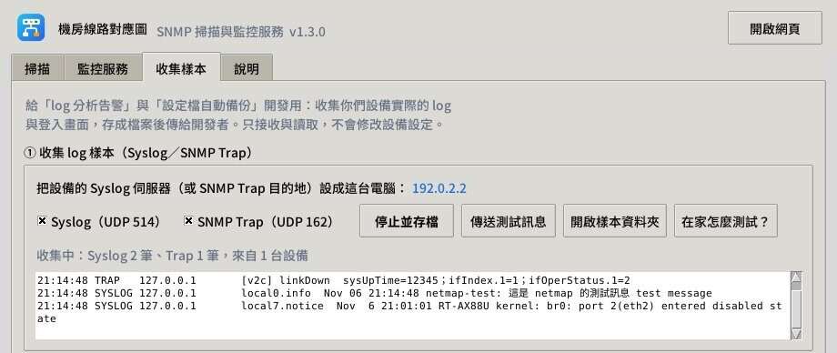
這個分頁是為了開發「log 分析告警」與「設定檔自動備份」而收集真實資料。只接收與讀取，不會修改設備設定。
- ① 收集 log 樣本：勾 Syslog（UDP 514）與／或 SNMP Trap（UDP 162），按開始。把設備的 Syslog 伺服器（或 Trap 目的地）設成畫面上顯示的這台電腦 IP。收集一段時間後按「停止並存檔」，按「開啟樣本資料夾」找到檔案。
- ② 設備登入紀錄：填設備 IP、SSH 埠、帳號、密碼（需要時加 enable 密碼），選設備類型，按「登入並記錄」。程式會執行唯讀指令（例如
show running-config），自動處理--More--，並自動遮蔽密碼、community 與金鑰。密碼不會被儲存。
在家測試（例如 ASUS 路由器）
- 網段探索：輸入家裡的網段（例如
192.168.1.0/24），可以看到手機、電視、NAS 等。 - 流量圖：路由器開啟 SSH（只限 LAN）後，在「監控服務」按「加入 SSH 設備…」，就能看到 WAN、LAN、Wi-Fi 的即時流量與 MRTG 流量圖。
- Syslog：在 ASUS 路由器管理頁「系統記錄 → 遠端記錄伺服器」填這台電腦的 IP，回到 netmap.exe 開始收集，重開 Wi-Fi 或拔插網路線就會有 log 進來。也可以按「傳送測試訊息」確認接收正常。
- SSH：在「系統管理 → 系統設定」把 SSH 設為只限 LAN 開啟，用路由器帳號登入並記錄。測完請記得關閉 SSH。
更新網頁（不用重新安裝）
服務的網頁和 線上版是同一份。線上版更新後，從服務主機打開首頁，上方會出現橘色的「有新版網頁 vX.Y.Z，按一下更新」，按下去就會下載並套用，約一秒後重新載入。只有網頁改版時不用重新安裝；程式本身（掃描、監控）有新版才需要重新下載安裝檔。
更新程式
netmap.exe 啟動時會檢查是否有新版本，有的話標題列會出現「有新版本」，點一下會下載 RackTrace-Setup.exe。直接執行它，安裝程式會自動停止舊版、覆蓋 C:\Program Files\RackTrace 裡的檔案並重新啟動服務；設定與流量紀錄都會保留（存在 C:\ProgramData\netmap）。免安裝版（單獨的 netmap.exe）則要自己關掉程式後取代舊檔。
11手機操作
- 單指拖曳平移，雙指縮放。
- 點設備時，下方出現提示卡顯示名稱與 IP，不會擋住畫面；往上拉才展開完整的設定。
- 適合現場查線：把分享連結或 QR Code 貼在機櫃上，手機掃了就能看（唯讀）。
12快捷鍵
| 按鍵／動作 | 功能 |
|---|---|
| 拖曳埠 → 埠 | 接線 |
| 拖曳已接線的埠 | 改插到別的埠 |
| 點埠 | 查整條路徑、開設定列 |
| 雙擊設備 | 切換圖示／網路埠模式 |
| Shift + 點埠 | 多選埠（設 LACP、PoE、VLAN） |
| Shift + 拖曳空白處 | 框選設備（已有選取時累加） |
| Ctrl／⌘ + 點設備 | 逐台加入或取消選取，兩台以上變成群組選取 |
| 右鍵（空白處或框選中） | 取消選取／取消框選 |
| 右鍵（樓層框） | 選取框內設備、取消這個框 |
| 拖曳空白處 | 平移畫布 |
| 點線，再雙擊線 | 加錨點（雙擊錨點刪除） |
| 右鍵／A | 在游標位置加設備 |
| +／− | 放大／縮小 |
| 0 | 回到預設位置 |
| Delete | 刪除選取的設備或線 |
| Ctrl+Z／Ctrl+Y | 復原／重做 |
| Ctrl+F | 搜尋 |
| Esc | 取消選取、關閉視窗 |
13常見問題
以前用 LINE Notify 收通知，現在不能用了？
LINE Notify 已在 2025 年 3 月 31 日停止服務。改用 Telegram、Discord（免費、設定最簡單），或 LINE 官方帳號的 Messaging API，見 告警通知。
告警一直沒收到？
先在設定按「測試」：失敗會顯示原因（Token 錯、網址錯、連不到網際網路）。測試成功但沒收到事件通知時，確認「開啟告警通知」有勾、事件類型有勾，以及 netmap.exe 一直開著。公司電腦連外要走 Proxy 的話，Windows 的 Proxy 設定要讓 netmap.exe 連得出去。
忘記管理密碼？
在跑 netmap.exe 的那台電腦打開監控網頁（服務主機不需要密碼），到「權限與檢視連結」重新設定或移除密碼。
掃描家裡的網段，為什麼什麼都掃不到？
家用路由器與一般電腦預設都沒有開 SNMP。請改用「網段探索」，或在公司的網管 Switch、防火牆上使用 SNMP 掃描。
流量圖一直是空的？
流量圖只記錄監控服務讀得到的設備。有 SNMP 的設備用「SNMP 掃描」後設為監控的圖；沒有 SNMP 的設備用「加入 SSH 設備…」。之後要讓 netmap.exe 一直開著，關掉的時段圖上會是空白。
掃描顯示「沒有回應」？
程式會自動診斷：如果 ping 得到但 SNMP 沒回應，通常是設備沒開 SNMP、community 打錯，或設備的 SNMP 存取清單沒有允許這台電腦。如果連 ping 都不通，請確認網段與路由。
輸入框打不出「.」或「/」？
v1.1.1 起，netmap.exe 的輸入框會自動切到英數模式，並把全形符號轉成半形。請更新到最新版。
資料存在哪裡？會上傳嗎？
網頁版存在你的瀏覽器（localStorage），不會上傳。netmap.exe 的設定、掃描結果與流量紀錄存在 %APPDATA%\netmap，SNMP 帳密以 Windows 帳號加密（DPAPI），只有同一個 Windows 帳號能解開。
畫面上的面板不見了？
按右上的「面板」按鈕，勾選要顯示的面板，或按「重設所有面板位置」。
圖跑到看不到的地方？
按右下的 ⌂ 或鍵盤 0 回到預設位置。
防毒軟體說 netmap.exe 可疑？
程式以 PyInstaller 打包且沒有付費簽章，部分防毒會誤判。程式碼公開在 GitHub，由 GitHub Actions 自動建置。也可以下載 netmap-snmp.zip 用 Python 直接執行。
14版本紀錄
- 手機的頂列有時會變成 3 列（例如狀態文字較長時），展開的設備屬性面板頂端（含關閉 ×）會被蓋住、回不到拓樸圖。現在面板高度會依頂列實際高度調整，× 一定看得到。
- 手機把瀏覽器切回前景、或網路恢復時，馬上重新連線，不用等下一輪；連線失敗時改成每 5 秒重試。
- 點一下紅色的「連不到監控服務」會顯示原因並立刻重試（手機沒有滑鼠提示可以看）。
- 點選線時，線上不再出現紅色 ✕ 拔除按鈕（容易被誤會成斷線）；要拔線用下方工具列的「拔線」、右鍵選單，或按 Delete。
- 在畫布的線上按右鍵，出現「開啟線路屬性」「追蹤整條路徑」「拔除這條線」。原本也可以點選線後按 Delete，或在右側線路屬性按「拔除」。
- 從監控服務開啟時，首頁「本地端」的服務資訊後面多了「下載安裝程式」連結；有新版 netmap.exe 時會標示「有新版 vX，下載安裝程式」。
- 網頁會從 GitHub 讀取最新的 exe 版本號，版本比對不再停在舊的數字。
- 套用網段探索結果時，路由器（SSH 用戶端清單）明確顯示「已不在線」的設備會被略過，不再當成新設備加進來；常見是手機換了隨機 MAC 後留下的舊 IP，避免圖上出現兩台同名的手機。完成訊息會列出略過了哪些。
- 線上版偵測 netmap.exe 時，如果這台電腦同時有兩個 RackTrace 服務（開機自動啟動的背景服務和 netmap.exe 視窗開的服務），會明確提醒它們是兩份不同的圖，並列出各自的埠與設備數讓你選要開哪一個，不再自動挑一個。
- 需要 exe 1.20.12 才分得出是哪一種服務與設備數；舊版只顯示埠號。
- 從 GitHub 上的線上版開啟時，如果這台電腦有執行 netmap.exe，畫面上方會提醒「線上版的圖只存在瀏覽器、和監控服務的圖不會同步」，並提供「開啟監控畫面」按鈕。
- 在設備上按右鍵選「連線到其他設備…」，搜尋並選一台設備，再選兩邊的埠，就能接上一條線，不用再拖曳。
- 程式、下載、上傳、連線數四欄的標題可以點擊排序（再點一次反向、第三次回到預設的流量排序），並記住你的選擇。
- 說明文字改清楚：流量從打開畫面才開始累計、只計 TCP 且不含內網，所以和網卡總流量對不起來；並顯示清單合計。
- 「現在的連線」的目前速率加上單位（Kb/s、Mb/s）。
- 安裝檔的下載連結改指向帶版本號的檔案（RackTrace-Setup-版本.exe），安裝程式本身的版本資訊也與程式版本一致。
- Windows 上用 TCP 擴充統計量出每條連線的下載、上傳量與目前速率，依流量排序，每 5 秒自動更新；需要系統管理員權限（安裝版的監控服務即可）。只計開始統計之後的 TCP 流量，QUIC／UDP 量不到。
- 跑監控服務的那台電腦，在設備的流量圖最下面會列出此刻的對外連線：哪個程式、連去哪個 IP、什麼服務、幾條連線。沒有防火牆送流量明細時也能用；但只有「此刻」，沒有各連線的流量。
- 終端設備（電腦）的流量圖與選取時段的統計，改用一般習慣的「下載／上傳」；交換器、防火牆等網路設備的埠仍用「流入／流出」。
- 在流量圖上拖曳就能選取一段時間，顯示這段的總流入／流出量、平均與最高速率；兩側的圓點可以左右調整，也可以整段拖移。
- 選好時段後，按「看這段時間的對外連線」可查看那段時間這台設備連去哪些 IP、用什麼服務、各多少流量（需要防火牆送出 NetFlow／IPFIX／sFlow）。
- 需要更新監控服務（exe 1.20.8）才能查詢指定時段。
- 刪除已轉成維修單的查線紀錄時，會詢問要不要一併刪除那張維修單，不再留下孤立的維修單。
- 查線卡片多了「結案」（設備已恢復時顯示「已恢復，結案」）與「刪除」，不必再開啟面板。
- 查線中的設備恢復回應後，查線面板與排障視圖會提示「已恢復」，可一鍵結案。
- DNS 對帳的結果列表預設更高，可拖曳右下角繼續拉高。
- 重新整理後的置中會在字型載入完成後再校正一次。
- 修正：專案有很多沒接線的終端設備時，縮小後（含重新整理、回到預設位置）畫面會空白。現在只有接在其他設備上的終端才會收成「終端 ×N」，沒接線的終端維持顯示。
- 新增第 4 個視圖「排障」：問題、查線、維修單三欄並排，原本線路表裡的故障紀錄與維修記錄移到這裡；檢查與告警按鈕合併成「排障」分頁上的數字徽章。
- 復原／重做移到頂列；框選與查線移到左側元件列；線色、走線、顯示圖層改為純圖示。
- 縮小畫面時，終端設備會自動收成「終端 ×N」摘要，點一下放大並展開（顯示圖層可關閉）。
- 窄螢幕與伺服器模式的頂列重新壓縮，不再溢出。
- DNS 對帳每一筆問題多了「略過（已知情）」：電腦已報廢、換硬碟等情況可以標成已排除，不再列為問題、不計入徽章數字與告警；在「已略過」分頁可改回待處理。
- 使用手冊第 8 章改為「故障排查與維修記錄」，說明單點／區域／全域、從故障通知帶入、處理紀錄與畫布標示。
- 修正：IP 欄填「DHCP」的設備不再被當成重複 IP，開範例不會一開始就跳紅色錯誤。
- 查線面板新增「轉成維修單」：把起點、故障點、各段備註帶進維修記錄，結案方式會變成修復方式。
- 新增維修單時，可從「設備沒有回應」「檢查發現」「查線紀錄」的清單挑一項，自動帶入範圍、對象和症狀。
- 每張維修單多了「處理紀錄」：自由填寫、依時間累積，會顯示在維修記錄表和 CSV。
- 表格檢視多了「維修記錄」：每筆維修單可分成單點、區域、全域，記錄狀態（待處理／處理中／已修復）、症狀、原因與修復方式，可匯出 CSV。
- 畫布會把未修復的設備與線路用虛線＋🔧 標出（紅＝待處理、黃＝處理中）；全域故障在畫面上方顯示紅色提示。
- 點記錄會跳到畫布並框住對象；設備面板新增「記錄維修」按鈕。
- 專案清單的「刪除」現在連目前開著的專案都能刪（會自動切回預設專案）；預設專案不能刪，改成可以「清空」。
- 連服務時，首頁多了「新增專案」一鍵入口。
- 畫面上已有設備時，載入範例或空白畫面前會先問：先儲存專案再載入、直接取代，或取消。
- 取代後仍可用「復原」或歷史版本找回。
- 範例重新排版：核心交換器在上，配線架、座位、電腦依序往下，一台交換器接多個下游，線不再繞到上方。
- 載入「中小企業辦公室」時預設顯示全部線路，點設備不會再多出一條線。
- 補上缺少的線號 H-3F-004，交換器接配線架與會議室 Hub 的埠位調整，線不再穿過設備名稱。
- 以前載入範例後，連到本機服務時，服務會對範例裡的假 IP 做 Ping，整張圖都變成斷線，右上角的檢查也跳出一堆數字。現在範例設備標記為「示範」：服務不再對它們 Ping／SNMP，網頁會產生模擬的燈號與流量（大部分正常、一條線偏滿、一條線壞掉可以練習故障查線），並在右上角標示「示範資料」。線上版（沒有服務）也看得到。把設備的 IP 改成真實位址，它就變成真設備、開始正常監控。
- 有些電腦安裝到最後會跳出「Failed to load Python DLL … _MEI…\python312.dll」。原因是單一檔案版每次啟動都要先解壓到暫存資料夾，被防毒或系統安全機制擋掉。安裝程式現在改裝「資料夾版」（程式檔直接放在 Program Files，不再解壓到暫存），升級時會先清掉舊檔。單獨下載的 netmap.exe 仍是單一檔案版。
- netmap.exe：網頁向服務要狀態時，如果服務內部出錯，以前會直接斷線（瀏覽器顯示 ERR_EMPTY_RESPONSE、網頁顯示「連不到監控服務」，也查不到原因）。現在會回 500 並把錯誤寫到 C:\ProgramData\netmap-service.log；資料裡有特殊型別造成的輸出失敗也會自動轉成文字。
- 沒有監控設備時，首頁的說明原本寫「按左邊的掃描設備」，但實際入口是下方的「新增監控設備」。現在會說明圖上有幾台設備、該按哪個按鈕，以及 SSH 設備要到 netmap.exe 的「監控服務」分頁加入。
- 首頁右邊的設備狀態欄裡，印表機、伺服器這類終端設備會顯示「undefined」文字並超出範圍。現在會依設備種類顯示正確圖示，找不到圖示時用通用圖示。
- 說明與更新記錄裡的範例 IP 一律改成 192.168.1.x，不含實際環境資料。
- 線上版／本機網頁（沒有連服務時）的資料只存在瀏覽器。超過 7 天沒有下載專案檔，會出現提醒，可以一鍵下載備份，或選擇 7 天後再提醒。連到本機服務時不會出現（服務自己有歷史版本）。
- 安裝版以前點 RackTrace 只會開網頁，沒有入口可以開 exe 視窗（掃描、傳送測試資料等）。開始功能表多一個「RackTrace 管理視窗」。
- 視窗寬 901～1380 之間時，上方工具列會比視窗寬，最右邊的「檔案」按鈕被切掉。現在會縮小間距與搜尋欄，窄於 1060 時改成只顯示圖示。
- netmap.exe 的「有新版本」按鈕改成下載 RackTrace-Setup.exe：執行後自動停止舊版、覆蓋 Program Files 裡的檔案並重新啟動，設定與流量紀錄保留。以前只下載單獨的 netmap.exe，裝在 Program Files 的舊檔不會被更新。
- 手機（寬度 620 px 以下）上方工具列的「檢查」按鈕蓋住搜尋框，已改成搜尋框和按鈕各佔一列，視圖分頁與專案名稱也縮小，不再被切掉。
- 下方分頁標籤移到工具列上方，在 1366×768 等筆電寬度不再蓋住縮放比例和左下角的圖例。
- 載入範例或自動排列後，「全部總覽」會連樓層框和標籤一起納入，整張圖都看得到。
- 更新紀錄 3.14.0～3.14.6 的日期寫成隔天，已改回正確日期。
- 開始頁多了一則提示：在線上版會說明資料只存在這台電腦的瀏覽器、如何安裝本機服務；在本機服務會說明圖存在這台電腦、線上版（網址）是另一份獨立資料、搬資料用匯出 JSON。按「我知道了」就不再顯示。
- 下方分頁標籤按右鍵：改名稱、往前／往後移、刪除這個分頁（上面的設備會搬到你選的頁面）、新增分頁。
- 還沒有任何分頁的時候，框選設備後，上方操作列的「移到分頁…」也有「＋ 新增樓層並移入…」，不用先到檔案選單新增分頁。
- 範例新增「三層樓辦公室（多樓層）」：1F 機房、2F 辦公室、3F 研發，可以直接試「全部總覽」、樓層框、跨樓層查線。
- 樓層框合併的距離加大，同一樓層的設備不用貼很近也會畫成同一個框。
- 在樓層框或標籤上按右鍵：可以「取消這個框」（把框內設備移回主圖）；設備右鍵選單也有「移回主圖」。「顯示圖層」新增「樓層框線」，可以隱藏總覽裡的虛線框。同一樓層的框只要碰到或靠得很近就會合併成一個框。虛線框只在「全部總覽」出現，而且第一頁（主圖）不畫框，只標出劃進其他樓層的設備，圖面不再到處是框。
- 修正：在某個分頁新增設備時，會避開其他分頁的設備，不再疊在別頁設備上（疊住時在「全部總覽」看起來像設備不見了）。
- Ctrl（Mac 是 ⌘）＋點設備可以逐台加入或移除選取，選到兩台以上就是群組選取，可以一起拖曳、移到分頁；框選拖曳到一半或開著框選模式時，按右鍵可以取消。
- 總覽裡的樓層框改成「一群一個框」：同一樓層的設備如果分得很開，會各畫各的框，不會再把中間不相干的區域也圈進去。每個框都有樓層名稱標籤，點標籤選取這個框內的設備，拖曳框線或標籤就整群一起移動。
- 下方分頁標籤加上顏色圓點和異常數字，設備屬性的「所在頁面」新增「＋ 新增分頁並移入…」。
- 新增「全部總覽」：所有樓層攤開在同一張圖，每個樓層用彩色虛線框和標籤標出（點標籤可選取整層、雙擊切到那一層）。
- 下方的分頁標籤每個樓層多了顏色圓點（和總覽裡的虛線框同色），有設備沒回應的樓層會顯示紅色數字。設備屬性的「所在頁面」選單新增「＋ 新增分頁並移入…」。
- 框選加強：Shift＋拖曳可以累加到目前的選取，Shift＋點設備可以加入或移除，在空白處按右鍵取消選取；選好後用上方的「移到分頁…」直接劃進樓層。
- 按「接到…」選好起點埠後，點下面的分頁標籤切到另一頁，再點要接的埠就能接線（之前切頁會取消）。接好後兩頁都會出現「→ 對面頁面」的連接標籤，可以看到源頭是哪台設備、哪個埠。
- 本機服務（127.0.0.1）的網頁原本打包在程式裡，要重新安裝才會更新。現在首頁版本旁會出現橘色的「有新版網頁，按一下更新」，按下去就會下載最新網頁，不用重新安裝。
- 只有你按了才會更新，只能在服務主機上操作；下載的內容會檢查大小和是否為 RackTrace 網頁。程式本身（掃描、監控）有改動時仍要重新安裝。
- 首頁右邊的設備狀態欄最下面多了「＋ 新增監控設備」，點下去直接開掃描設備（設定 SNMP 帳號、掃描更多設備）。
- 右鍵選單的「大小」：左邊是「還原」按鈕，右邊「－ 目前大小 ＋」直接顯示現在的百分比；按一下不會關掉選單，可以連續調整。
- 在設備上按右鍵，「大小」那一列可以縮小／放大（每次 10%，50%～200%）或還原 100%；選了一群設備時會一起縮放。連線會跟著設備走。
- 埠名稱像 Port1～Port9 被截成「Por…」的問題：現在只顯示數字（SFP、XG 這類名稱照舊）。
- 有些設備的 LLDP／CDP 會回報 127.0.1.1（Linux 系統的主機名稱位址）、169.254.x.x 之類的管理位址，掃描沿著鄰居找下一台時會去連它而出現「沒有回應」的錯誤；現在會直接略過這些位址。
- 已經裝了開機自動啟動的服務時，雙擊 netmap.exe（或 Program Files 裡的執行檔）不再開出第二個視窗和第二個服務搶埠，而是直接用瀏覽器打開服務的網頁；設定、掃描都在網頁上做，資料只有一份。
- 要強制開舊的視窗程式，捷徑加參數 --gui。
- 從舊版搬過來的設定裡「讓線上版網頁偵測」是關著的，升級後會改成開（只回本機、只給版本與埠號）；你之後手動關掉會被記住。
- 偵測時也會試服務自動改用的埠（18080、18765）。
- 在服務主機上，「檔案」選單最上面多了「掃描設備（SNMP／網段探索）」，不用回到首頁也能開。
- 安裝版服務的首頁多了「掃描設備」：在服務主機的瀏覽器填目標 IP 和 SNMP 帳號（v1／v2c／v3），或用網段探索，即時看到進度和紀錄。
- 掃完可以選「保留目前的圖，加入新設備」或「取代」（取代會自動備份）。帳密加密存在服務主機，不會傳到其他電腦；只有服務主機上的瀏覽器能發起掃描。
- 安裝程式設定共用資料夾權限的方式改了：舊版可能讓搬過去的資料檔誰都打不開，服務會出現「unable to open database file」。
- 服務遇到資料庫打不開，會自動重設權限，還是不行就把壞的資料庫改名另開新的，服務一定起得來（舊的檔案保留為 metrics.db.bad-…）。
- 背景服務遇到網頁埠被佔用，會自動換一個空的埠，捷徑照樣打得開。
- 服務的啟動過程記在 C:\ProgramData\netmap-service.log（不含密碼）；開捷徑失敗時會顯示最後幾行，並請工作排程器再啟動一次。
- 線材選單新增「WAN 專線」「VPN 隧道」：不管用哪種顏色模式，WAN 都用橘色長虛線、VPN 用紫色點線畫，線上固定標出「WAN／VPN」，和機房內的網線一眼分得出來。
- 圖例會自動列出圖上有用到的 WAN／VPN 樣式。
- 新版啟動時如果網頁埠被舊版 netmap 佔著，會自動結束舊版再接手，不會再搶同一個埠；同版或較新的不會被關。
- 只會結束版本比自己舊、而且程式名稱是 netmap／RackTrace 的程式。
- 首頁「本地端 netmap.exe」主要按鈕改為下載 RackTrace-Setup.exe（開機自動啟動），免安裝的 netmap.exe 放在旁邊。
- netmap.exe 1.17.1：「讓線上版網頁偵測到這個程式」新安裝預設開啟（只允許本機、只回傳版本與埠號），不用再手動勾選才偵測得到。
- 選取「這台和底下設備」後的提示改顯示在畫面下方並縮短，不會蓋住上方的整理／移動／刪除按鈕。
- 新增 RackTrace-Setup.exe：裝到 Program Files，註冊成開機自動啟動、不用登入的背景服務（工作排程器，以 SYSTEM 執行），可選擇在 Windows 防火牆開放內網連線，並建立「RackTrace」開始功能表／桌面捷徑（開瀏覽器連到服務）。
- 資料放在 C:\ProgramData\netmap（只有系統管理員能讀）；安裝時會把原本帳號的資料複製過去並重新加密密碼，不會覆蓋已有的資料；升級不動資料，解除安裝時詢問是否刪除資料。
- netmap.exe 新增 --machine（用共用資料夾）、--open（開瀏覽器連到服務）、--migrate-user-data 參數。
- 監控服務（netmap.exe 1.16.1）：「網路上的設備」裡有 IP、沒有名稱的設備，先用 NetBIOS 問，還是沒有的再用反向 DNS（PTR）問 DNS 伺服器，每個 IP 6 小時最多問一次。DHCP 發的 IP 常會被登記進 DNS，手機和 IoT 不回應 NetBIOS 時就靠這個補名字，補到的名稱會自動套到圖上只有 MAC／IP 的設備。
- 用哪台 DNS：「設定」裡填的 DNS 伺服器優先，沒填就用這台電腦自己的 DNS（最多試 3 台）。
- 雙擊把單台設備從圖示展開成埠位時，以前會自動把整排設備往右、往下推，圖就亂了。現在左上角固定、其他設備完全不動；如果展開後蓋到旁邊的設備，只會提醒，由你決定要不要拖開。（「全部展開」仍會自動整理間距。）
- 右鍵選單分成「選取這台和底下的終端」（預設，不含別台交換器／Hub 和它們底下的設備）與「選取這台和底下全部」；「整理這台底下的終端」只會整理這台的終端，不會把其他交換器的設備混進來。
- 選取後上方操作列多一個「含底下的交換器／Hub」勾選，可以隨時切換。
- 在設備上按右鍵：選取這台和底下的設備、選取底下並整理排列、只選取直接連到這台的設備，也可以開啟屬性、複製、刪除。（在空白處按右鍵還是加入設備。）
- 框選或選取一群設備後，上方出現操作列：整理排列、移到指定位置（點畫布放置）、移到其他分頁、刪除（要按兩次確認，可以復原）、取消選取。
- 「底下的設備」依線路階層判斷：從數據機、防火牆、路由器、L3 往下，不含同一層互連的設備。
- 埠名很長（例如 Port 12、GigabitEthernet1/0/12）時，設備上的埠位標籤以前只剩「Por…」；現在只顯示埠號，完整名稱仍在提示和側欄。
- 點連接埠時跳出的放大埠號選單，現在和設備上的排列一致（GS1900 為上排雙數、下排單數）。
- 左邊的設備列新增「ISP 數據機」（光世代 ONT、VDSL 數據機），「⋯ 更多設備」選單也有；以前只有範本和掃描才會出現數據機。
- 設備的「埠位配置」新增「埠號排列」：上單下雙（1 在上排，D-Link 等）或上雙下單（2 在上排、1 在下排，Zyxel GS1900）；型號含 GS1900／GS1920 的設備預設用上雙下單。
- 機櫃視圖的小埠位圖也跟著一致。
- 以前只要即時更新的任何一步出錯，都會顯示「連不到監控服務」。現在只有真的連不上才顯示，並在提示裡寫出原因；連得上但畫面更新出錯時，狀態仍正常顯示，原因放在提示裡方便回報。
- 頂端新增專案按鈕（也在「檔案 ▸ 切換／管理專案」）：可以切換、新增、複製、改名、刪除專案；每個專案的圖、歷史版本分開存放。
- 常駐服務版（netmap.exe）：每個專案各自的設備圖、歷史版本、事件與監控紀錄；SNMP／SSH 帳密、告警與連線設定所有專案共用。換專案時所有連到同一個服務的瀏覽器會自動重新載入。
- 原有的圖會自動成為「預設專案」，不會遺失；預設專案不能刪除，目前開著的專案也不能刪除。
- 設備（含框選群組）可以一直往畫布左邊、上邊拖，不再卡在邊界；放開後整張圖會自動往回平移並留出邊距，畫面不會跳動。
- 「顯示圖層」等彈出面板在小螢幕或手機上超出畫面時，改成面板內可捲動，不再被頂端工具列蓋住、捲不到上半部。
- 線路表與設備清單上方新增「顯示範圍」，可選全部頁面或單一機房／分頁；線路只要有一端在該分頁就會列出。
- 點到其他分頁的列，會自動切到那個分頁並標出位置。
- 「顯示圖層」新增「終端設備」：選「隱藏（主幹圖）」就把電腦、筆電、手機、PLC 等終端和它們的線收起來，只留交換器、路由器、防火牆、AP 等網路設備與串接線；資料不會刪，切回「顯示」即可。
- 只有一張圖時，畫布下方也會常駐「主圖 ＋ 新增機房／分頁」，不用再去選單找；每張圖（樓層、機房、分公司）有自己的設備與機櫃。
- 機櫃視圖上方也有同一排分頁，可以直接切換機房；機櫃與未上架清單只顯示該分頁的設備。
- 機櫃視圖右側新增「新增設備」：交換器、防火牆、路由器、配線架、伺服器、NAS，按了留在機櫃視圖，新設備出現在「未上架設備」，拖到 U 位就上架
- DNS 對帳新增「把不在圖上的電腦加到圖上」，每一列也有「加到圖上」：用電腦名稱、IP、MAC 建立設備，排在圖的最下方並框選起來，可以整組拖到想放的位置
- netmap.exe：有些電腦的 NetBIOS 回應不含 MAC（全是 0），改用防火牆／交換器 ARP 表依 IP 補上 MAC，圖上只顯示 MAC 的設備就對得到電腦名稱了
- DNS 對帳表每一列標出對到圖上的哪台設備（用 MAC，沒有 MAC 才用 IP），沒對到的標「不在圖上」
- 新增「把電腦名稱套到圖上」：名稱還是 MAC、IP 或「LLDP 鄰居」的設備換成 NetBIOS 問到的電腦名稱，並補上缺的 MAC／IP；你自己取的名稱不會被改，可以復原
- 對帳完成後，圖上的自動命名會立刻用新的結果更新，不用等 5 分鐘
- 設備新增「連線依據」：自動（預設，有 MAC 就跟著 MAC 找 IP）／固定 IP／電腦名稱（問 DNS）
- 自動：DHCP 換了 IP 時，心跳會從防火牆、交換器的 ARP 表用 MAC 找到新的 IP 繼續 Ping，圖上的 IP 也會自動改成新的
- 電腦名稱：每 5 分鐘問一次 AD DNS 這個名稱現在是哪個 IP；可另外填 DNS 名稱
- 直角走線改成在設備之間找最短、轉彎最少的路，不再一律往下繞到最底下；平行的線自動錯開
- netmap.exe：防火牆／路由器的空埠直接接了無網管交換器（例如 D-Link）時，從防火牆 ARP 表是在哪個介面學到的，推斷出底下有哪些設備，畫成「未管理交換器（防火牆 X3）」並接好線
- 掃描結果選「保留目前的圖」時，推斷出來的無網管交換器和終端設備也會加進來；圖上已經有的設備（MAC 相同）直接接上線，不會重複新增
- 新增「框選」：按工具列的「框選」或按住 Shift，在空白處拖出範圍，框到的設備會一起選取，拖曳其中任一台就整組一起移動（點空白處或 Esc 取消）
- 只框到埠、沒框到整台設備時，維持原本的框選埠
- netmap.exe：沒有送出 LLDP 的防火牆、路由器（例如 SonicWall 預設只收不送），改從交換器的 MAC 表找出它直接接在哪一埠，自動畫線
- 掃描結果選「保留目前的圖」時，圖上已有的網路設備之間的線也會補上（兩端的埠都還沒接線時）
- 點高密度設備跳出的選埠視窗，拖曳標題列就能移開，不會擋住後面的設備
- netmap.exe：LLDP 鄰居的 MAC 寫法不標準（0x88d7…、88-d7-…）時也認得出來，用 MAC 命名並自動換成電腦名稱，不再一律叫「LLDP 鄰居」
- 沒有描述、也沒宣告自己是交換器的 LLDP 鄰居（例如埠名是 eth1 的 Linux 主機）改成端點設備，不再被當成交換器
- 圖上叫「LLDP 鄰居」而且有 MAC 或 IP 的設備，也會自動換成電腦名稱
- netmap.exe：交換器透過 LLDP 看到的電腦、伺服器、IP 電話（只送出網卡 MAC、沒有名稱的鄰居），以前會全部併成一台叫「LLDP 鄰居」的交換器；現在每個各自成為一台設備，之後會自動換成電腦名稱
- LLDP 回報的管理位址是 127.0.0.1 這類無效位址時不再當成 IP，也不會一直顯示「SNMP 無回應」
- netmap.exe：掃描完成後預設改成「保留目前的圖，加入新設備」：圖上已有的設備套上 SNMP 對應，圖上還沒有的（例如只掃了防火牆）加到圖的最下面
- 選「取代」而且這次掃到的設備比圖上少時，會再確認一次，避免整張圖被換掉
- 圖上名稱還是 MAC 或 IP 的設備，會自動換成電腦名稱並補上 IP
- 名稱來源：「網路上的設備」（路由器、L3 Switch、這台電腦的 ARP 表）用 NetBIOS 問到的電腦名稱，以及 DNS 對帳時問到的名稱
- 監控服務每 10 分鐘用 NetBIOS 補問還沒有名稱的 IP（同一個 IP 6 小時最多問一次）
- 設備資料新增「密碼位置」：記下這台的管理密碼存在哪裡（例如 KeePass ▸ 網路設備 ▸ 核心交換器），不存密碼本身
- 填進去的內容看起來像密碼時會出現紅色提醒
- 可以用搜尋找到，也會匯出到設備清單 CSV
- 預覽時每筆要刪除的記錄都標出最後更新時間（例如「最後更新 2015-07-14，11.3 年前」），手動建立的固定記錄也會標出來
- 新增 -ListOld 30：列出超過 30 天沒更新的記錄，開啟 AD DNS「清除過時記錄」前先確認會清掉哪些
- 上方統計縮成一排，下方的電腦清單自動撐滿視窗，一次看得到更多台
- netmap.exe：修正上一版打包錯誤造成無法開啟
- 網頁埠開不起來時，直接查出原因（Windows 保留的範圍，或是哪個程式佔用、PID 多少），並找一個確認可用的埠，按一下就改用並啟動；錯誤訊息可以用滑鼠選取、一鍵複製
- 網頁埠改成獨佔模式，避免兩個程式同時搶同一個埠
- 預設只預覽，加 -Apply 才修改，修改前還要輸入 YES
- 執行當下用 NetBIOS 重新確認每個 IP 現在是哪台電腦，和掃描時不同就略過
- 不碰網域控制站、DNS 伺服器與 AD 服務記錄（@、_ 開頭），也不刪手動建立的固定記錄
- 一次最多改 20 筆，超過就停；可用 -Only 只做指定的步驟
- 修改前匯出整個區域並存 CSV，自動產生還原腳本；一筆失敗就停，最後重新查詢驗證
- 新增「檢查」按鈕：資料檢查、圖面比對、DNS 對帳集中在一起，按鈕上直接顯示待處理的總數，每項也顯示自己的狀態和上次檢查時間
- 鈴鐺裡可以切換「事件紀錄」和「網路上的設備」
- 右上角齒輪＝告警、心跳與權限設定
- 「檔案」選單只留跟這份圖有關的操作（下載、匯出、匯入、分享、歷史版本、線標列印、新增頁面）
- 結果改成表格：電腦名稱、目前 IP、DNS 登記的 IP，對得上打 ✓、對不上打 ✕；DNS 裡錯的 IP 用紅色刪除線標出
- 按「現在對帳」後即時顯示進度和已經找到的電腦，不用等全部掃完
- 可以一鍵產生 PowerShell 修正腳本：刪除舊記錄、補上正確的正向與反查記錄；預設只預覽，加 -Apply 才修改，修改前自動備份
- 新增「檔案 ▸ DNS 對帳」：用 NetBIOS 問出每個 IP 上實際是哪台電腦，和 AD 的 DNS 記錄比對
- 抓得出 DNS 指到舊 IP、同一個名稱有多筆記錄、IP 被舊名稱占用、沒開機的電腦還占著別人的 IP、DNS 沒有記錄、名稱重複、反查不符
- 監控服務每 6 小時自動對帳，發現新問題會記成事件並發告警（跟「圖面比對」同一個開關）
- 不需要帳密；DNS 伺服器與網域預設用這台電腦的設定，也可以自己填 AD 的 IP
- 擋 Ping 但確認在線的時間，在心跳曲線上用綠色標出，不再算成遺失或畫成紅色
- 「遺失」改成只算真的離線的時間
- 網段探索給的暫時名稱（IP 或「廠商 IP」）會自動換成路由器記錄的主機名稱；類型是「其他」的設備也會依主機名稱改成手機、筆電、平板等
- 用網卡廠商命名的（例如 CLOUD NETWORK 192.168.1.165）會改回只顯示 IP；你自己取的名稱不會被改
- Ping 不通時再用 ARP 確認（同網段的電腦就算防火牆擋了 Ping 也一定會回 ARP），筆電開機後很快就會顯示在線
- 路由器用戶端清單支援 ASUS 等 Broadcom 路由器的 Wi-Fi 關聯表（wl assoclist），能分出 2.4G／5G／6G
- 網段探索：網卡廠商（例如 Cloud Network Technology、AzureWave）不再被當成設備品牌拿來命名；隨機 MAC 或 Wi-Fi 網卡的設備先畫成無線
- 網段探索結果可以「保留目前的圖，加入新設備」：保留你取的名稱、位置、接線與無線設定，只加入新設備、更新改變的 IP
- 沒有點選時不畫無線連線；點選手機、筆電或它連的 AP／路由器時才會出現
- 想一直看到的話，在「顯示圖層 ▸ 無線連線」選「淡色顯示」
- 點選 AP 或路由器時，連在它上面的無線設備連線會和網路線一樣亮起，不再被調暗
- 手機、筆電到 AP／路由器的無線連線預設畫成淡虛線，滑鼠移上去顯示頻段，點選或查線時才變明顯
- 同一台 AP 超過 12 台無線設備時自動改成只在點選時顯示，避免圖被虛線蓋住
- 顯示圖層新增「無線連線」：淡色顯示／點選時／全部明顯
- 路由器的用戶端清單只算現在真的在線的設備（Wi-Fi 關聯表、ASUS 用戶端清單、交換表），不再把 ARP 表裡殘留的關機設備當成在線
- 看不出有線或無線時標「不確定」，不再一律當成有線
- 偵測到有線、而且路由器回報接在哪個埠時，自動在圖上補上那條線
- 連線方式會自動偵測：執行 netmap.exe 的這台電腦看自己的網卡；其他設備看路由器／AP 的用戶端清單（SSH）。偵測到改變就自動更新圖，手動設定過的設備不會被改，可以按「改回自動偵測」
- Ping 不通但有其他證據（這台電腦自己、仍在路由器的用戶端清單上、埠上有流量）時不再標成「斷線」，改顯示「在線（Ping 不通）」，也不會發斷線告警
- 壓縮與 QR Code 元件改為內建，不再從網路載入；機房電腦沒有網路也能開啟、存檔、分享
- 網頁字型改為背景載入，連不上網路時直接用電腦內建字型，不會卡住畫面
- 可以下載離線版：一個 HTML 檔，點兩下就用瀏覽器開啟
- 工具正式命名為 RackTrace（機房線路對應圖），換上新的標誌：機櫃拉出三條線，黃、藍是確認過的線，灰色虛線是還沒驗證的線
- 網頁、手冊、netmap.exe 的視窗與工作列圖示一起更新；網址、檔名 netmap.exe 與資料都不變，直接覆蓋即可
- 圖面比對：監控服務定期讀 LLDP／CDP 與 MAC 表，和圖上的線對帳，列出接錯設備、埠號不同、圖上沒畫、改線沒更新、有線但沒連線，可一鍵改成實際接法或略過
- 每條線都有驗證狀態：實際確認過、超過 7 天、不符、手動資料；查線路徑上每一段都標出來，也可以在圖上用虛線標出未驗證的線
- IP 衝突偵測：同一個 IP 同時出現兩個 MAC 會記事件並告警
- 資料檢查：重複 IP／MAC／線號、VLAN 不一致、光纖接到網路線埠、線太長、聚合只設一端
- 填 IP、MAC 時就提醒重複
- 每台設備、每條線都可以看自己的變更紀錄：誰在什麼時候改了哪個埠、接到哪裡
- 線標匯出可選 Brother P-touch Editor、Epson Label Editor、DYMO Connect、Brady Workstation：自動用合適的編碼，並說明匯入步驟
- 標籤 CSV 可以「一張標籤一列」（每條線兩列：A 端、B 端），標籤軟體直接整批印；可預覽前幾列
- 精簡內容給窄標籤帶：GigabitEthernet → Gi，可限制每行字數
- A4 標籤新增旗標式：對折夾在線上，兩面都看得到線號
- 掃描時從 IF-MIB 介面堆疊表找聚合成員：不支援 LACP MIB 的 Cisco、FortiGate、Linux bond 也能標出 Port-Channel
- 一端已知是聚合、另一端沒回報時，依對端自動補上同一群組
- 兩端都不知道的平行線標成「可能是聚合」，點那條線或埠一鍵設定或略過（也可能是 STP 備援線）
- 監控服務每小時用設定好的 SNMP 帳密，去試圖上還沒監控的網路設備、伺服器、NAS、NVR、印表機；有回應就自動開始監控並補上埠號，不用重新掃描
- 設定 ▸ 心跳與設備偵測 可以關閉，或按「現在偵測一次」
- Ping 心跳：圖上所有有 IP 的設備都有綠／黃／紅燈號，斷線、延遲變高一眼看到；設備屬性看延遲曲線與最近事件
- 告警通知：設備斷線、主幹埠離線、新設備加入時送到 Telegram、Discord、Slack、Teams、LINE（Messaging API）、Email 或自訂 Webhook，同一段時間的事件合併成一則
- 事件紀錄：斷線、恢復、埠離線、新設備都記下來（保留 180 天），右上角鈴鐺顯示未讀
- 歷史版本：每次修改記下是誰、改了什麼，可以預覽舊版本再一鍵還原；線上版也會在這台瀏覽器自動留版本
- 管理密碼與檢視連結：其他電腦要登入才能編輯；可以產生只能看的連結或 QR Code 給主管、同仁
- 線標列印：A4 標籤紙（含 QR Code，掃了打開那條線）或匯出 Brother P-touch Editor 用的 CSV
- 網路上的設備：從路由器、防火牆的 ARP 表整理出新加入、很久沒出現、不在圖上的設備，一鍵加到圖上
- 多張圖（頁面）：樓層、機房、分公司分開畫，跨頁面的線顯示連接標籤，點一下跳過去；查線照樣整條走完
- 光纖收容箱與光纖束：一條多芯光纜一次建立，每一芯標 TIA-598 色碼，畫成一條粗線，點開看每一芯接到哪裡
- 平行線收成一條：同一對設備之間的多條線（例如 LACP）可以收成一條粗線
- 48 埠設備在縮小畫面或平板上點埠時，會放大成一排大按鈕讓你選，不會點錯
- 用網段探索建立的設備預設不輪詢，連帶讓跑 netmap.exe 的那台電腦也讀不到流量；現在本機一定會讀網卡流量
- 右側分成「設備資訊」與「網路流量」兩個分頁，分頁上的燈號顯示監控狀態；埠也分成「埠設定」與「網路流量」
- 新增無線連線：手機、筆電可設成用 Wi-Fi 連到 AP 或路由器（2.4G／5G／6G），畫成虛線並標頻段，查線、故障查線、影響範圍都會經過
- 用 SSH 監控的路由器會列出連在它上面的設備（有線／無線、頻段、名稱、訊號），一鍵把無線設備套用到圖上
- 設備的編輯／刪除按鈕移到名稱下方，不再擋住埠與線
- 新增「手機」設備種類
- netmap.exe 所有輸入框都能用鍵盤右邊數字鍵的「.」輸入 IP
- 點設備時，右側一定會說明為什麼沒有即時狀態：線上版網頁、IP 和 netmap.exe 那台電腦不一樣，或是還在等第一次讀取
- 監控網頁會告訴你 netmap.exe 那台電腦的 IP，方便對照
- 即時狀態卡片加上今日流量縮圖與今日下載／上傳總量，點縮圖打開這台設備的流量圖
- 跑 netmap.exe 的那台電腦會自動監控自己的網卡流量，不需要 SNMP（圖上這台電腦的 IP 要填對）
- 一般電腦不再顯示「等待監控服務輪詢」，改說明怎麼看它的流量
- netmap.exe 接收 NetFlow v5／v9、IPFIX、sFlow，算出每台電腦用了多少流量、連去哪裡、用什麼服務；接在傻瓜 Switch 後面的電腦也看得到
- 流量圖新增「誰在用」排行（15 分鐘／1 小時／24 小時／7 天），點一台看 33 小時曲線、服務與連線對象
- 點電腦看它在經過的每一段線上佔多少；點一個埠看這段線上的主要使用者
- 各廠牌設定教學：SonicWall、FortiGate、Cisco、Meraki、MikroTik、UniFi、pfSense、OPNsense、Sophos、Palo Alto 等 26 種，怎麼開 SNMP 與流量匯出
- 開始頁先選用法：「網頁版」手動畫圖，「本地端 netmap.exe」自動掃描與監控，會記住上次的選擇
- 本地端分頁：功能介紹、三步開始與下載；從監控服務開啟時改顯示監控狀態、有問題的設備與流量圖入口
- 可偵測這台電腦是否開著 netmap.exe，一鍵切換到監控畫面（需在 netmap.exe 勾選允許，預設關閉）
- 點畫布上的設備，右側「即時狀態」卡片新增「這台設備的流量圖與狀態」按鈕
- 一次看這台設備的上下線、錯誤封包、最後輪詢時間，以及每個埠的日／週／月／年流量圖
- 從設備進入單埠詳細圖後，可以直接返回這台設備
- 沒有 SNMP 的設備（家用路由器、Linux、NAS、OpenWrt）可以改用 SSH 監控流量，一樣有即時流量與 MRTG 流量圖
- ASUS 路由器自動辨識 WAN、LAN、2.4G、5G Wi-Fi
- 設備重開機、計數器歸零時不再出現假的流量尖峰
- 流量圖沒有資料時，直接說明原因與下一步
- 每個埠都有 MRTG 式的每日（5 分鐘）、每週（30 分鐘）、每月（2 小時）、每年（1 天）流量圖，列出最大／平均／目前值與使用率
- 流量圖總覽：所有埠最近 24 小時的小圖，可依最忙排序、篩選
- 可切換 bps／使用率 %、顯示尖峰，並匯出 CSV；流量圖資料保存約 2 年
- 首頁顯示目前版本、更新內容與最新的 netmap.exe 下載
- 新增詳細的線上使用手冊（附畫面截圖）
- netmap.exe 會自動檢查是否有新版本
- netmap.exe 新增「收集樣本」分頁：暫時當 Syslog／SNMP Trap 接收器，存成樣本檔
- SSH 登入紀錄：自動處理 --More-- 與 enable，密碼、community、金鑰自動遮蔽
- 網段探索：不需要 SNMP，用 ping 與 ARP 列出在線設備、廠牌與種類（家用網路也能用）
- SNMP 沒回應時自動診斷是「沒開 SNMP」還是「連不到」
- 掃描完成自動帶入網頁；關閉程式改為清楚的「結束程式／縮到工作列」
- 新的標誌與程式圖示
- netmap.exe 的輸入框在注音輸入法下也能打 . / - 等符號
- 圖形化 SNMP 掃描
- 監控服務：在內網提供網頁，多人共用同一張圖
- 每個埠的流量、使用率、上下線燈號與 24 小時曲線，線路依使用率變色
- 故障查線：逐段標記、自動健檢、建議下一步、影響範圍、故障紀錄
- SNMP 自動掃描程式（LLDP／CDP、VLAN、PoE、LACP、MAC 表）
- 回到預設位置按鈕（鍵盤 0）、鍵盤 +／− 縮放
- 手機點設備改為底部提示卡，往上拉才展開設定；支援雙指縮放
- 型號清單標出埠數，新增 SonicWall NSa 2800／3800
- 用語統一為「埠」
- 線路、線號與箭頭互相避開不重疊
- 預設只顯示主幹線路，終端線以色標配對
- 點設備亮出整條到網路入口的路徑，並加方向箭頭
- 屬性列可移動、收合，廠牌型號擴充到 90 多家，深色／淺色切換
- 面板可拖曳、收合、開關；畫布可自由平移
- 埠燈號改為小燈，配線架背面到資訊座顯示為牆內虛線
- 可隱藏線路並以色標配對兩端
- 深色浮動介面、設備插圖，雙擊切換圖示／網路埠模式
- 開始頁分成新增／匯入／範例
- 機櫃視圖、直角走線、LACP／PoE／VLAN
- CSV／SVG／PNG／JSON 匯出、LLDP 匯入、分享連結與 QR Code
- 防火牆、Switch、配線架、資訊座埠對埠接線，點埠追蹤整條路徑
- 產業範例與自動排版
RackTrace · 網頁 v3.21.8 · netmap.exe v1.20.13 · GitHub